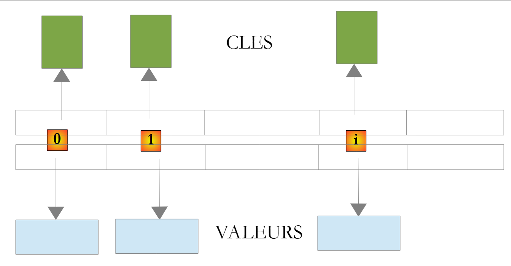

5. Commonly Used Kotlin Classes
Here we present some commonly used classes and functions: strings, arrays, collections, files, and regular expressions. Kotlin provides two libraries for this purpose: its own standard library (packages [kotlin.text], [kotlin.collections], [kotlin.io]…), which adds hundreds of functions to the basic types—most of them in the form of extension functions (Chapter 4)—and the JDK (the Java API SE), which Kotlin uses directly, without any adaptation. We add to this the functional operations on collections ([filter], [map], [groupBy]…) and sequences, which are the standard way in Kotlin to search, sort, group, or transform the elements of a collection: they serve the same purpose as Java’s API Stream. Earlier, we showed how to find information about the thousands of classes and functions available. This resource is indispensable for Kotlin developers, even experienced ones.
The examples in this chapter, except for the sample application at the end, are single-file programs, organized as in Chapter 3 within the Gradle project [05-classes-kotlin] in the course code: the program [Chaines01.kt] is in the package [chaines01] (folder [src/main/kotlin/chaines01]) and can be run using the command [gradlew -q run -Pmain=chaines01.Chaines01Kt] or by clicking the green triangle in IntelliJ or IDEA. Like the rest of the course, they are conducted in French (local language fr-FR). Note that every Kotlin file automatically imports the packages [kotlin.*], [kotlin.text.*], [kotlin.collections.*], [kotlin.ranges.*], [kotlin.sequences.*], [kotlin.io.*]… as well as [java.lang.*]: functions from the standard library can therefore be used without the [import] statement. However, classes from the other packages in JDK ([java.util], [java.text], [java.time], [java.nio.file]…) must be imported, whereas in the Java course this was handled by the compact source files.
5.1. Seeking help with Kotlin classes
The Kotlin standard library contains several thousand functions, and a Kotlin program for JVM also has access to the more than 4,000 public classes in JDK. No one knows them all: Kotlin developers constantly consult their documentation. This documentation is available online, free of charge, and kept up to date for each version.
5.1.1. Online Documentation
The starting point is the kotlinlang.org website for JetBrains. There you’ll find:
- the standard library reference: https://kotlinlang.org/api/core/kotlin-stdlib/. It describes, package by package ([kotlin.text], [kotlin.collections], [kotlin.io]…), all the classes, interfaces, and functions in the library—including extension functions—classified by the type they extend: The page for [String] thus lists both its members ([length], [get]…), as well as the dozens of extension functions that apply to it ([substringBefore], [padStart], [lines]…);
- a search box at the top of each page where you can type a class or function name ([buildString], [joinToString]…);
- the language documentation (Language Guide), with pages on strings, collections, sequences, and more, as well as a “What’s New” page that describes the new features in each release. Language changes are discussed publicly in the form of proposals, the KEEP (Kotlin Evolution and Enhancement Process), available at github.com/Kotlin/KEEP;
- play.kotlinlang.org, the Kotlin “sandbox”: here, you can type and run a program in the browser without installing anything.
For the classes in JDK used by a Kotlin program ([java.time.LocalDate], [java.text.Collator], [java.nio.file.Files]…), the reference remains that of the API Java SE 25: https://docs.oracle.com/en/java/javase/25/docs/api/. It describes the classes using Java syntax, which must be converted: a [int] is a [Int], a [String[]] is a [Array<String>], a [getNom()] method is used as a [nom] property…
The page for a class or function, for example kotlin.String, provides:
- the class’s package and the platforms on which it exists (Kotlin also runs on JavaScript and in native code: some functions are specific to JVM);
- its declaration, its parent types, and the interfaces it implements;
- a general description, often accompanied by executable examples;
- a list of its constructors, properties, functions, members, and extensions, followed by details for each: parameters, return value, possible exceptions, and the version of Kotlin in which it was introduced (under the “Since Kotlin” section).
The documentation is in English. A search using the function name preceded by "kotlin" ("kotlin joinToString") usually takes you directly to the correct page.
5.1.2. KDoc and the editor's help
Like Javadoc for Java, this documentation is generated from documentation comments written in the source code, called KDoc in Kotlin. Such a comment begins with [/**] and is placed immediately before a class, property, or function. The tax calculation function in this chapter’s example application could be documented as follows:
The comment begins with a summary sentence; the [@param] tags describe the parameters, and [@return] describes the return value ([@throws] would describe an exception, and [@property] would describe a class property). Unlike Javadoc, which uses HTML tags, the text of a KDoc comment is written in Markdown: [*italique*], [**gras**], lists, and links to other elements in the code written in square brackets, such as [[salaire]] or [[TrancheImpot]]. The Dokka tool from JetBrains, added to the project as a Gradle plugin ([id("org.jetbrains.dokka")]), generates HTML pages similar to those in the Kotlin reference.
The code editor (IntelliJ IDEA, Visual Studio Code with the Kotlin extension) leverages these comments and provides immediate assistance without leaving the code:
- autocompletion: after typing [uneChaine.], the editor suggests a list of properties and functions applicable to the object, including both members and extension functions (the latter are indicated by the type they extend, for example [for String in kotlin.text]), along with their parameters and return types;
- Quick documentation: hovering over a class or function name (or pressing Ctrl+Q in IntelliJ IDEA) displays its KDoc or, for a class in the JDK, its Javadoc;
- Parameter help: When you type the opening parenthesis of a call (or press Ctrl+P in IntelliJ IDEA), the editor displays the function’s various overloads, the name and role of each parameter, and any default values;
- Go to Definition (Ctrl+B in IntelliJ, IDEA, F12 in VS Code): displays the source code for the class or function. Gradle downloads the source code for the Kotlin standard library, and JDK comes with the source code for its own library (file [lib/src.zip]): this allows you to read the code for [joinToString] or [java.util.ArrayList], which is very educational. The code in the Kotlin standard library is often very short, as it relies on classes from JDK;
- Show the Kotlin bytecode (Tools > Kotlin > Show Kotlin Bytecode menu, then the Decompile button): displays, in the form of equivalent Java code, what the compiler generated from the Kotlin code. This is the way to understand what an extension function, a property, or a [when] becomes.
Finally, to test a function without writing a program, IntelliJ IDEA provides scratch files (File > New > Scratch File > Kotlin): you type instructions there, and their results are displayed next to each line. At the command line, the compiler’s launcher (Chapter 2) evaluates an expression: [kotlinr -e 'println("abc".repeat(3))'] displays [abcabcabc].
5.2. Strings
5.2.1. The String type
The type [String] (package [kotlin]) represents strings. In JVM, a Kotlin string is a [java.lang.String] object: the compiler maps the two types, and a string is passed from Kotlin to Java (and vice versa) without any conversion. However, the [String] type as seen by Kotlin has only four members ([length], [get], [subSequence], [compareTo]) and the operator [plus]: all other operations are extension functions from the standard library (package [kotlin.text]), which are called like methods. The Java methods in [java.lang.String] that have a Kotlin equivalent are hidden: ["abc".strip()] is rejected by the compiler ([unresolved reference 'strip' on receiver of type 'String']); instead, use ["abc".trim()]. Here are a few examples:
property or function | role |
[length: Int] | property: number of characters in the string |
[operator fun get(index: Int): Char] | Character No. [index]; the first character is No. 0. Written as [s[index]] |
[startsWith(prefix: String, ignoreCase = false)] | returns [true] if the string begins with [prefix] |
[endsWith(suffix: String, ignoreCase = false)] | results in [true] if the string ends with [suffix] |
[contains(other: CharSequence, ignoreCase = false)] | results in [true] if the string contains [other]; can also be written as [other in s] |
[equals(other: String?, ignoreCase = false)] | returns [true] if the string has the same content as [other]; the operator [==] calls [equals] |
[indexOf(string: String, startIndex = 0, ignoreCase = false)] | first occurrence of [string] in the string, starting at position [startIndex], or -1. Another overload searches for a character |
[lastIndexOf(char: Char, ...)] | Same as [indexOf] but returns the last position instead of the first |
[joinToString(separator = ", ", prefix = "", postfix = "")] | collection and array extension function: concatenates the elements, separating them with [separator] |
[replace(oldChar: Char, newChar: Char, ignoreCase = false)] | Returns a copy of the string where the character [oldChar] has been replaced by [newChar]; an overloaded version replaces one string with another |
[split(vararg delimiters: String, ...): List<String>] | the string is treated as a sequence of fields separated by one of the separators [delimiters], taken literally; the result is the list of these fields. An overloaded function takes a regular expression [Regex] |
[substring(startIndex: Int, endIndex: Int)] | a substring consisting of the characters from position [startIndex] (inclusive) to position [endIndex] (exclusive); [substring(range: IntRange)] accepts a range |
[substringBefore(delimiter)], [substringAfter(delimiter)] | from the preceding string, following the first occurrence of [delimiter] ([substringBeforeLast], [substringAfterLast]: the last one) |
[lowercase()], [uppercase()] | converts the string to lowercase, uppercase |
[trim()] | removes leading and trailing spaces from the string ([trimStart], [trimEnd]: on one side only) |
[repeat(n: Int)] | repeats the string [n] times |
[reversed()] | reverses the string |
[isEmpty()], [isBlank()] | returns [true] if the string is empty, or if it contains only spaces |
[lines(): List<String>] | returns the list of lines in the string |
[format(vararg args: Any?)] | returns the string, used as a format, in which the positions [%s], [%d]… have been replaced by the arguments |
Note the numerous parameters [ignoreCase], which have the default value [false]: Kotlin does not require, as Java does, separate methods [equals] and [equalsIgnoreCase]; we write [s.equals(autre, ignoreCase = true)] using named arguments (Chapter 3).
It’s important to note that a string of type [String] is immutable; it cannot be modified after it is created. When a function returns a string, that string is different from the string to which the function was applied. Thus, [s1.trim()] returns the string [s2], and [s1] and [s2] are two different strings: [s1] has not changed.
A Kotlin string is not an array, but thanks to the [get] operator (Chapter 4), we can access its nth character using the same notation as for an array element, whereas Java requires a different notation. Similarly, the number of characters is the property [c.length], and the size of an array is the property [tableau.size]: Kotlin does not have the inconsistency found in Java between the [length()] method for strings and the [length] field for arrays.
The program [Chaines01.kt] is as follows:
Results:
Comments:
- lines 7–8: length is a property, and the operator [[10]] returns character #10, which is the 11th character in the string;
- lines 10, 12: an unsuccessful search returns -1;
- line 13: the two parameters of [substring] are the positions of the first character to be kept and the first character to be discarded: this returns the 7 characters from positions 4 through 10. This is the general convention in both Kotlin and Java for specifying a range of indices (start included, end excluded): it is used in many functions;
- line 14: an overload of
*[substring]takes an interval*[IntRange]*(Chapter 3), where both endpoints are included: [4..10] refers to the same characters as the parameters [(4, 11)]. We could also have written [4 until 11] or [4..<11]*; - Line 15: [uppercase] and [lowercase] (Kotlin 1.5) do not depend on the machine's language (they use Unicode rules, which are language-independent); the older Java types [toUpperCase] and [toLowerCase], which did depend on it (in Turkish, the lowercase "i" becomes "İ"), are deprecated in Kotlin;
- Lines 18–22: The [String] type has no insertion function: we concatenate the beginning of the string, the inserted text, and the end of the string, or we use [replaceRange], which replaces characters in a range with text: replacing the empty range starting at position 9 is equivalent to inserting. We’ll see that the [StringBuilder] class has a [insert] function;
- line 24: [split] splits the string into fields and returns a list ([List<String>], described later), not an array as in Java. Note that this is an important difference from Java: with a [String] parameter, the separator in [split] is treated literally; to make it a regular expression—which we’ll cover at the end of the chapter—you must pass a [Regex] object. [\s+] refers to a sequence of one or more whitespace characters (space, tab, newline, etc.). It is written in a raw string delimited by three quotation marks, where the character [\] is a regular character and does not need to be doubled (we’ll come back to this later);
- line 25: The property [indices] of a list (or array) is the range of its indices, in this case [0..4];
- line 28: [joinToString] performs the inverse of [split]. It is an extension function for lists and arrays, whereas Java provides the static method [String.join];
- line 29: [trim] removes leading and trailing spaces. Kotlin’s [trim] recognizes all Unicode spaces (it uses the function [Char.isWhitespace]): it therefore corresponds to the Java method [strip], and not to the Java method [trim], which recognizes only the spaces in the ASCII code;
- Lines 31–35: a few functions from the Kotlin library that have no direct equivalent in the Java class [String]: [substringBefore] and [substringAfterLast] return what comes before the first space and what comes after the last, without calculating positions; [reversed] reverses the string; [count] counts the characters that satisfy a condition, expressed by a lambda: [{ it == 'e' }] is an anonymous function whose implicit parameter [it] is the character being examined (lambdas are covered in Chapter 7). Since its lambda is the last argument of [count], it is written after the function name, without parentheses; finally, [lines] splits a text into lines, regardless of the line-ending used ([\n], [\r\n], or [\r]), and returns the list of lines;
- line 37: all the previous functions returned new strings: [uneChaine] was not modified (last line of the results);
- lines 41–42: a high-level function, called by the function [main] as in Chapter 3.
5.2.2. The split and joinToString functions
The program [Chaines02.kt] delves deeper into splitting a string into fields. Readers familiar with Java will find two significant differences from Java’s [split] method:
Results:
Comments:
- Line 7: The fields are separated by the character [:]. Two consecutive [:] delimit an empty field (line 3 of the results), and the final [:] in the string delimits a fifth field—also empty—which is retained (line 5 of the results). This is the first difference from Java, where the
*[split]method removes empty fields from the end: in Kotlin,*[joinToString]always reconstructs the original string (line 6 of the results). Kotlin’s behavior is more consistent: a string containing n separators always yields n + 1 fields. To replicate Java’s behavior, one would write [ligne.split(":").dropLastWhile { it.isEmpty() }]; - line 8: the function [withIndex] allows you to iterate over a list using both the index and the element, which is retrieved via destructuring (Chapter 3);
- line 15: the optional parameter [limit] of [split] sets the maximum number of fields: the splitting stops at the first separator, and the last field contains the entire remainder of the string. A delimiter is used, for example, to separate a parameter’s name from its value in a [nom=valeur] line when the value itself may contain the delimiter. Note that when a list is displayed using a template ([$champs]), its elements appear in square brackets, separated by commas: this is the [toString] for lists;
- line 19: the second difference from Java: a separator of type [String] is treated literally; to describe a separator using a regular expression, you must pass a [Regex] object. [":+"] denotes one or more consecutive [:] characters. The two consecutive [:] characters form a single separator, and the intermediate empty field disappears; the last empty field, however, remains;
- line 24: [split] accepts multiple separators ([vararg], Chapter 3), characters, or strings: in this case, the comma and the semicolon. The function [map] then applies the lambda [{ it.trim() }] to each field and returns the list of results: in a single statement, we obtain the three “cleaned” fields. The functions [map], [filter], and their many counterparts are presented later in this chapter;
- line 27: the same result using a regular expression: the pattern [\s*[,;]\s*] matches a comma or semicolon, preceded and followed by any number of spaces; the spaces surrounding the separators are removed along with them. Those at the beginning and end of the string are removed beforehand by [trim]. The pattern is written in a raw string, without doubling the [\]; the following line also uses a raw string to display the pattern as-is;
- lines 32–36: To remove both the spaces around the fields and the empty fields, the fields can be processed one by one: the field consisting of two spaces between two commas becomes empty after [trim] and is not retained. The editable list created by [mutableListOf] to store the retained fields will be presented a little later;
- line 41: the same result in a single statement: [map] removes spaces from each field, then [filter] retains only the non-empty fields. This is the idiomatic way to write this in Kotlin;
- line 46: the separator [" | "] contains the character [|], which has a special meaning in a regular expression (“or”). Since the separator is treated literally, no special precautions are needed, whereas in Java you would have to write [split(Pattern.quote(" | "))]. If you need to construct a regular expression from arbitrary text, the function [Regex.escape] serves the same purpose as [Pattern.quote];
- Lines 49–51: Unlike Java's [String.join], which accepts only strings, [joinToString] accepts elements of any type; here, an array of integers [IntArray]: each element is converted by its function [toString]. Its optional parameters [prefix] and [postfix] add text at the beginning and end, and its last parameter, [transform], is a lambda that converts each element to text; written after the parentheses, it produces the texts “No. 1,” “No. 2,” etc. What Java does with a [StringJoiner] or with the API Stream can be accomplished with a single call.
5.2.3. Searching for and Comparing Strings
String comparison is more subtle than it seems: should uppercase and lowercase letters be distinguished? How should “student” be compared to “essay”? And what does the [==] operator compare? On this last point, Kotlin has fixed a well-known pitfall in Java. The program [Chaines03.kt] demonstrates the search and comparison functions:
Results:
Comments:
- lines 3–4: the classes from JDK used by the program must be imported;
- lines 11–14: By default, [contains], [startsWith], and [endsWith] perform an exact, character-by-character comparison: “LANGAGE” is not found;
- line 16: These functions have an optional parameter, [ignoreCase], which instructs the program to ignore case. Java does not have an equivalent: both strings must be entered in lowercase;
- line 18: the operator [in] calls the function [contains] (Chapter 4): ["Kotlin" in titre] naturally reads as “Kotlin is in the title”;
- Lines 19–21: The function [regionMatches] compares a portion of one string to a portion of another string. Its parameters are the starting position in the string, the other string, the starting position in the other string, and the number of characters to compare; the last parameter, which is optional, indicates whether to ignore case (in Java, this parameter comes first in one of the overloads);
- lines 23–29: the most important part of this program. A variable of type [String] contains a reference to a string object (Chapter 4). The variable [oui] refers to a string “yes” constructed at runtime: it is a different object from the literal string “yes” in the program. In Kotlin, the operator [] compares the contents: it calls the function [equals], and [oui == "oui"] evaluates to [true] (line 8 of the results). To compare references—that is, to determine whether two variables refer to the same object—Kotlin has another operator, [=], and [oui === "oui"] is equal to [false] (line 9 of the results). In Java, it’s the opposite: [] compares references there, and the common mistake of writing [reponse == "oui"] instead of [reponse.equals("oui")] does not exist in Kotlin. The case-insensitive comparison is written as [equals(..., ignoreCase = true)], which is the correct way to validate a “yes” response entered via the keyboard in either uppercase or lowercase. You almost never need [=] with strings;
- Lines 32–37: The function [compareTo] returns a negative, zero, or positive integer depending on whether the string precedes, equals, or follows the parameter string. It compares the character codes: “élève” comes after “essai” because the code for the character “é” (233) is greater than that for the character “e” (101); here, it returns the difference between the two codes, 132. Since [String] implements [Comparable<String>], the operators [<], [>], [<=], and [>=] apply to strings and call [compareTo]: [a < b] is equal to [false]. To sort words according to the rules of a language, an object [java.text.Collator] derived from JDK is used: for French, the character “é” is sorted with “e,” and “élève” comes before “essai” (line 14 of the results). We’ll use the order specified by a [Collator] to sort words intended for a user, and [compareTo] to compare technical identifiers (file names, keys, etc.). The function [compareTo] also has a parameter [ignoreCase];
- lines 40–48: [isEmpty] checks for an empty string, and [isBlank] checks for an empty string or one containing only spaces. A string may also be absent: in that case, its variable is of type [String?] and has the value [null] (Chapter 3). Here, [System.getenv]—a Java method that returns the value of an environment variable—returns [null] because the requested variable does not exist. The compiler prohibits calling [absente.isBlank()], which could throw a [NullPointerException] exception. The library provides extension functions for the [String?] type, which accept [null]: [isNullOrBlank] (and [isNullOrEmpty]) check whether Java writes [absente == null || absente.isBlank()], and [orEmpty] returns the string, or an empty string if it is [null]. The safe call to [absente?.length] returns [null];
- line 51: [padStart] pads a string from the left to a length of 8 characters with spaces or the specified character ([padStart(5, '0')]), and [padEnd] pads it from the right; [repeat] repeats a string. The formats ["%8s"] and ["%-8s"], shown below, could also be used.
5.2.4. Templates, Formats, and Raw Strings
Since Chapter 3, we have been constructing the strings to be displayed using string templates: In a string, [$nom] is replaced by the value of the variable [nom], and [${expression}] by the value of any expression. This is string interpolation, a feature that Java lacks (a proposal, “String Templates,” was previewed in Java 21 and 22 but later removed) and which C# writes as [$"{nom}"]. The compiler transforms a template into concatenations: there is no additional runtime overhead.
To align values in columns, set the number of decimal places for a number, or display a date, you also use formats, either with the [String.format] function or the extension function [format] applied to the format itself, which do the same thing (and call the Java method [String.format]). The format is a text string in which [%[-][largeur][.précision]conversion] specifiers indicate where and how to insert the following parameters. The [Chaines04.kt] program provides examples of these, along with the raw Kotlin strings:
Results:
Comments:
- Line 17: A template: [$nom] and [$age] are replaced by the values of the variables, and [${2026 - age}] by the value of the expression. Curly braces are required whenever what follows [$] is not a simple variable name: [$personne.nom] would insert the value of [personne] followed by the text “.name,” whereas [${personne.nom}] inserts the property [nom];
- line 19: a width aligns the value to the right within a 10-character field; preceded by the sign [-], it aligns it to the left;
- lines 19–21: the most common conversions:
specifier | meaning | example (fr-FR) |
[%s] | string; any object is converted by its function [toString] | dupont |
[%d], [%5d] | integer, possibly 5 characters long | 45 |
[%05d] | integer with at least 5 digits, padded with zeros | 00045 |
[%X] | hexadecimal integer ([%x]: in lowercase) | 2D |
[%.2f], [%12.2f] | real number with 2 decimal places, possibly 12 characters long | 2345.68 |
[%,.2f], [%,d] | same as above, with a thousands separator | 2,345.68 |
[%e] | real number in scientific notation | 2.345678e+03 |
[%n] | system line break | |
[%%] | the % character | % |
- Numbers are formatted according to the current language, in this case French: decimal point, space as a thousands separator. This is a thin non-breaking space (character U+202F), which looks like a regular space but prevents a line break in the middle of a number; similarly, a non-breaking space (U+00A0) precedes the € symbol and the % symbol. This should be taken into account when comparing these texts to strings written with regular spaces. Parameter types are checked only at runtime: passing a [Int] to the [%f] conversion throws a [IllegalFormatConversionException] exception;
- line 23: ["...".format(...)] is equivalent to [String.format("...", ...)] (and to the Java method [formatted]). Since [if] is a Kotlin expression (Chapter 3), it can provide a parameter, whereas Java uses the conditional operator [? :];
- Line 25: A template does not format numbers; it calls the [toString] function on the value, which displays a [Double] with a decimal point and all its decimal places, regardless of the machine’s language. For a display intended for a user, the template and format are combined: [${"%.2f".format(salaire)}]. An overload of [format] takes the language to be used as its first parameter: [Locale.US] returns a decimal point;
- Lines 29–32: Monetary amounts and percentages are formatted using [java.text.NumberFormat] objects from JDK, which are obtained for a given language and country ([Locale.FRANCE]). The percentage format multiplies the value by 100. Note line 31: the Java method [setMinimumFractionDigits(2)] is used in Kotlin as a property assignment. Kotlin treats the Java method pairs [getXxx()]/[setXxx(...)] as properties [xxx];
- lines 34–37: the dates API and [java.time] from JDK are formatted by a [DateTimeFormatter] object constructed from a template: [dd] day, [MM] month, [yyyy] year, [HH] hour, [mm] minutes, [ss] seconds, [EEEE] day of the week spelled out, [MMMM] month spelled out. Be careful with case: [MM] is the month, [mm] is the minutes. The names of the days and months are those used in everyday language. Templates may contain expressions that themselves contain strings: ["[${date.format(DateTimeFormatter.ofPattern("dd/MM/yyyy"))}] "];
- lines 40–43: the widths allow data to be displayed in columns;
- line 47: in a regular string, the character [\] introduces an escape sequence ([\n], [\t], [\"], [\$]…); to obtain the character [\] itself, it must be doubled;
- Line 50: A raw string is delimited by three quotation marks. Escape sequences do not exist in raw strings: the character [\] is treated as a regular character. This is a convenient way to write Windows paths and regular expressions, which Java does not support (its text blocks retain escape sequences). However, you cannot write a line break like [\n] here; you need a true line break;
- Lines 54–61: A raw string can span multiple lines and contain unescaped quotation marks. It preserves everything written between the quotation marks, including the code indentation and the empty lines at the beginning and end. The [trimIndent] function removes the first and last lines if they are blank, then removes the indentation common to all lines (that of the least-indented line): the text JSON is displayed without the code margin and without the final line break, resulting in [println]. This is equivalent to Java 15 text blocks, but implemented using a library function. Unlike Java text blocks, templates work in raw strings: ["$nom"] and [${prix[0]] are replaced by their values, which eliminates the need for [format]; the [\] in ["C:\data"] does not need to be duplicated;
- Line 59: Since escape sequences do not exist in a raw string, you cannot write
***[\\$]to obtain a*[$]followed by a name without it being interpreted as a template: instead, we write [${'$'}], a template whose expression is the character [$]. Starting with Kotlin 2.2, we can also prefix the string with multiple [$]* ([$$"""..."""]): only sequences of two [$] then introduce a template, which is convenient for writing text that contains many [$]*; - Lines 64–68: The [trimMargin] function offers another way to specify the margin: each line begins—after any spaces—with a margin character ([|] by default), and everything preceding that character, including the character itself, is removed. Choose the most readable function: [trimIndent] for text copied as-is, and [trimMargin] when the first column of the text needs to be clearly visible.
There is also the class [java.text.MessageFormat], whose formats refer to parameters by their numbers: [MessageFormat.format("{0} a {1} ans", nom, age)]. It is used for messages translated into multiple languages, where the order of parameters may vary from one language to another; it is used in Kotlin exactly as it is in Java.
5.2.5. The StringBuilder class
We have noted that functions of the type [String] that operate on a string of type [s1] return another string of type [s2]. The [StringBuilder] class allows you to modify a string without creating a new string for each operation. This improves performance when constructing a string through many successive additions, by avoiding the proliferation of strings with very short lifespans. In Kotlin, for JVM, [kotlin.text.StringBuilder] is a type alias ([typealias]) for the [java.lang.StringBuilder] class of JDK: it is the same class, which the standard library extends with a few extension functions ([appendLine], the [[]] operator…). It can be used without [import].
The class supports various constructors:
constructor | role |
[StringBuilder()] | creates an empty object with an initial capacity of 16 characters |
[StringBuilder(str: String)] | construct and initialize with [str]; the initial capacity is the length of [str] plus 16 |
[StringBuilder(capacity: Int)] | constructing an empty object with an initial capacity of [capacity] characters |
A [StringBuilder] object stores its characters in an array whose size—its capacity—is automatically adjusted as the text grows. The program [Chaines05.kt] illustrates this concept of capacity:
Results:
Comments:
- line 5: creation of a [StringBuilder] object containing “test”: its initial capacity is 4 + 16 = 20 characters. As with any class in Kotlin, there is no [new] operator;
- line 6: [length] is the current number of characters. Kotlin represents this as a property (without parentheses), as with [String]: the Java method [length()] of the [CharSequence] interface is treated in Kotlin as the property [length]. [capacity()], which is not part of this interface and does not follow the [getXxx()] convention, remains a method: it represents the number of characters the object can hold before it needs to expand its array;
- line 7: the [repeat] function from the standard library executes the lambda that follows it 10 times (Chapter 3);
- line 8: [append] appends a string to the end of the text;
- line 12: creation of an empty [StringBuilder] object with an initial capacity of 10, to which “test” is immediately added. The [append] method returns the object itself: it can be called directly on the result of the constructor.
The results, which are identical to those of the Java program since it is the same class, show that when the capacity is insufficient, it is slightly more than doubled: the new capacity is the old one multiplied by 2, plus 2 (20, 42, 86 for the first object; 10, 22, 46 for the second). Each expansion allocates a new array and copies the characters into it. If the approximate size of the text is known in advance, setting it at construction time avoids these successive expansions.
Here are some of the class’s functions:
function | role |
[append(str: String?): StringBuilder] | adds [str] to the end of the text. Overridden to accept the types [Int], [Double], [Char], [Boolean], [Any?]… |
[appendLine(value)] | Kotlin extension: adds [value] followed by a line break [\n]; without parameters, adds only the line break |
[insert(offset: Int, str: String?)] | Inserts [str] at position [offset]; overridden as [append] |
[delete(start: Int, end: Int)] | deletes characters from positions [start] (inclusive) to [end] (exclusive); [deleteCharAt] deletes one character |
[replace(start: Int, end: Int, str: String)] | replaces the characters at positions [start] (inclusive) through [end] (exclusive) with [str] |
[reverse()] | reverses the order of the characters |
[sb[index]], [sb[index] = ch] | reads and replaces character No. [index] (operators [get] and [set]; [set] is a Kotlin extension of the Java method [setCharAt]) |
[indexOf(str: String)] | position of [str] in the text, or -1 |
[toString()] | returns the text as a string [String] |
The program [Chaines06.kt] uses these, as well as the function [buildString], which is the idiomatic way to construct a string in Kotlin:
Results:
Comments:
- Line 6: The modification methods return the [StringBuilder] object itself, which allows them to be chained together. Let’s follow the steps: “test” becomes “testabCD " ([append]), then "texyZTstabCD" ([insert] in position 2), then "xyZTstabCD " ([delete] for characters 0 and 1), and finally "XYZTstabCD" ([replace] for characters 0 and 1, with "XY"). Note that, unlike the function [replace] from [String], the function from [StringBuilder] does not search for text: it replaces a range of positions. [println] displays the object by calling its function [toString];
- lines 8–9: the [[]] operator reads and modifies a character, as in an array; [str3[0] = 'x'] calls [str3.setCharAt(0, 'x')]. In the template, [$str3] calls [toString];
- line 11: [reverse] reverses the text. For a string [String], the function [reversed], seen in [Chaines01.kt], is simpler;
- Lines 14–16: Building a multi-line text through successive additions—this is the typical use of [StringBuilder]. The additions are chained together on a single line of code;
- lines 19–20: The function [joinTo] is the counterpart to [joinToString]: instead of creating a new string, it appends the elements separated by the delimiter to an existing [StringBuilder] (more precisely, to any [Appendable] object); [appendLine] then adds a line break;
- line 23: a formatted string is added. The [%f] conversion requires a real number: passing the integer [total] would throw a [IllegalFormatConversionException] exception at runtime, hence the [total.toDouble()] conversion;
- line 25: the final text is obtained as a string [String];
- lines 30–35: the function [buildString] creates a [StringBuilder], executes the lambda that follows it, and then returns the constructed text as a [String]. In the lambda, the [StringBuilder] is the implicit receiver ([this]): we write [appendLine(...)] rather than [sb.appendLine(...)]. This type of lambda, called a lambda with a receiver, is covered in Chapter 7; it allows you to write highly readable “building blocks.” The variable [tableau] is an immutable [String], declared by [val], and the intermediate [StringBuilder] is not even visible. Note also how [padStart] right-aligns numbers within columns;
- line 40: for a sequence of elements separated by a delimiter, with a prefix and a suffix, [joinToString] provides the functionality of the Java class [java.util.StringJoiner], which remains usable but is of little interest in Kotlin.
For a few concatenations, the [+] operator and the templates are sufficient: the compiler optimizes them. [StringBuilder] (or [buildString]) is the preferred choice when the number of additions is large or unknown, typically within a loop: the [s += ...] concatenation in a loop with n iterations creates n strings and copies the entire previously constructed string in each iteration. In older Java code, you may encounter the [StringBuffer] class, which has the same methods as [StringBuilder] but makes them usable simultaneously by multiple threads, at the cost of some performance overhead: today, [StringBuilder] is preferred over it.
5.2.6. Parsing a string without copying it
Each call to [substring] or [split] creates new strings in memory. In performance-critical code (such as analyzing large files or network requests), you may want to avoid creating new strings. Neither Kotlin nor Java has a “substring” type built into the language, but several functions operate on a portion of a string without copying it. The program [Chaines07.kt] compares several ways to parse a line in the format “last_name:first_name:age”:
Results:
Comments:
- line 10: the most readable and most common approach in Kotlin: [split] returns a list of three strings, which destructuring (Chapter 3) assigns to three variables; [toInt] then converts the age to an integer. However, it creates a list and three strings;
- Lines 16–17: With [substring], each call creates a new string, even if, as with the age, it is only used for a moment;
- line 21: the Kotlin function [toInt] applies only to a string; but the static method [Integer.parseInt] of JDK has an overload (Java 9) that parses the characters between two positions in the string, starting from the specified base (here 10), without creating a substring. A Kotlin program can call it directly: that is the whole point of interoperability with Java;
- Line 23: [regionMatches], which we've already seen, compares a portion of the string to another string without copying it;
- line 27: [CharBuffer.wrap] (package [java.nio] of JDK) returns a view of characters 0 through [p1] - 1 of the string: an object that does not contain a copy of the characters, but provides a means of accessing them. It implements the [CharSequence] interface, as do [String] and [StringBuilder]. Note that the function [subSequence] of [String], a member of this interface, is not a view: for a string, it creates a copy of the characters, just like [substring] (it returns a view for a
*[CharBuffer]). Kotlin treats the Java method***[charAt]of this interface as the operator***[[]], and its method[length()]as the property*[length]; - lines 30–31: Many of the extension functions of
*[kotlin.text]are defined not on*[String]*, but on[CharSequence]: [startsWith], [count], [contains], [indexOf], [split], [lines]… therefore also apply to a view, or to a [StringBuilder], without first converting it to [String]. Regular expressions, which we’ll cover at the end of the chapter, also accept a [CharSequence]*; - line 34: the second parameter of [indexOf] is the starting position for the search;
- line 37: a string is created only if it is actually needed.
These techniques are optimization tools: for an ordinary program, [split] and [substring] are perfectly suitable. Furthermore, the virtual machine stores strings that contain only characters from the Latin-1 character set (as is the case with French text) using one byte per character instead of two (“compact strings,” Java 9), which cuts the memory they occupy in half; Kotlin strings, which are Java strings, benefit from this. We’ll only try to avoid copies in code that has been measured to be critical to performance.
5.3. Arrays
5.3.1. Array extension functions
We saw in Chapter 3 that Kotlin has two types of arrays: arrays of objects [Array<T>] (created by [arrayOf]), and arrays of primitive types [IntArray], [DoubleArray], [CharArray]… (created by [intArrayOf], [doubleArrayOf]…), compiled into arrays of Java primitive types ([int[]], [double[]]…). In Java, arrays do not have any useful methods: apart from the field [length], all operations are static methods of the utility class [java.util.Arrays]. In Kotlin, arrays have a property [size], operators [[]], and, most importantly, dozens of extension functions from the standard library (package [kotlin.collections]), which are called like methods: [tableau.sort()] instead of [Arrays.sort(tableau)]. They allow you to sort an array, search for an element in it, copy it, fill it… They exist for every type of array ([IntArray], [DoubleArray]…, [Array<T>]) and most often call, via JVM, the methods of the [Arrays] class.
function | role |
[binarySearch(element, fromIndex = 0, toIndex = size)] | Returns the position of [element] in the array, which must be sorted; a negative number if [element] is missing |
[copyOf(newSize: Int)] | returns a new array of [newSize] elements containing the first elements of the array, padded with zeros as needed ([false] for booleans); for a [Array<T>], the result is a [Array<T?>] padded with [null]. Without parameters, returns a copy of the same size |
[copyOfRange(fromIndex: Int, toIndex: Int)] | returns a new array consisting of elements from [fromIndex] (inclusive) to [toIndex] (exclusive); [sliceArray(range)] does the same with an interval |
[copyInto(destination, destinationOffset = 0, startIndex = 0, endIndex = size)] | copies the elements of the array into another existing array (equivalent to [System.arraycopy]) |
[contentEquals(other)] | returns [true] if both arrays have the same elements in the same order |
[fill(element, fromIndex = 0, toIndex = size)] | Assigns [element] to all table elements or to a range of indices |
[sort()], [sort(fromIndex, toIndex)] | sorts the array, or a range of indices, according to the natural order of its elements; [sortWith(comparator)] sorts an array of objects according to a [Comparator] (Chapter 4); [sortDescending()] sorts in descending order |
[sorted()], [sortedWith(comparator)] | returns a sorted list without modifying the array |
[reverse()], [reversed()] | reverses the array; returns a reversed list |
[contentToString()] | converts the array elements into a string [[e1, e2, ...]]; [contentDeepToString] does the same for an array of arrays |
[indexOf(element)], [lastIndexOf(element)], [contains(element)] | linear search: first or last position of [element], or -1; presence of [element] ([element in tableau]) |
[asList()] | returns a list that is a view of the array |
[toList()], [toMutableList()] | returns a new list, either read-only or editable, containing the elements of the array |
[plus(element)] | returns a new array, one element larger, consisting of the elements of the array followed by [element]; written as [tableau + element] |
In addition, there are functions common to arrays and collections ([sum], [max], [count], [filter], [map], [joinToString]…), which we will cover later.
The program [Tableaux01.kt] illustrates the use of some of these functions:
Comments:
- line 4: an enumeration (Chapter 3), declared at the file level;
- Lines 23–40: The function [saisie] enters the elements of an array typed in via the keyboard. Since the number of elements is not known in advance, the function starts with an empty array (line 25) and expands it by one element for each new entry (line 38). The size of an array is set when it is created: the operator [+] ([plus]) actually creates a new array that is one element larger, copies the elements from the old array into it, and adds the new element; [elements += element] here refers to [elements = elements + element], hence the declaration of [elements] by [var]. This is the equivalent, in a single statement, of the two Java statements [elements = Arrays.copyOf(elements, elements.length + 1)] and [elements[elements.length - 1] = element]. A more efficient algorithm would allocate space in groups of N elements. An array is not designed to be resized: this scenario is better handled with a mutable list, as we will see shortly;
- lines 32–35: the conversion of the entered string to a floating-point number by [toDoubleOrNull], which returns [null] if the string is not a number (Chapter 3). After the [element == null] check followed by [continue], the compiler knows that [element] is not [null]: its type becomes [Double] (intelligent type conversion), and it can be added to the array. [toDoubleOrNull] is not dependent on the machine’s language: it always expects a decimal point and rejects the input “3,6” (line 4 of the results);
- lines 52–69: the function [recherche] searches the array for values entered from the keyboard. The [when] function (line 64) selects the search method based on the requested type; since it operates on an enumeration and processes all its values, it does not require the [else] branch. For an unsorted array, a linear search is performed, examining the elements one by one. The standard library does not have a [indexOf] function for arrays of real numbers [DoubleArray]: it was removed because comparing real numbers for equality poses problems for the special values [NaN] and [-0.0]; [elements.indexOf(element)] is rejected by the compiler ([unresolved reference 'indexOf']). We therefore use [indexOfFirst], which returns the position of the first element that satisfies the condition expressed by a lambda, or -1; unlike in Java, there is no need to write the search function. For a sorted array, we perform a binary search using [binarySearch], which halves the search range at each step: it finds an element among one million in about twenty comparisons;
- line 15: the array is sorted, here according to the natural order of numbers. [elements] is declared by [val] in [main]: the variable always refers to the same array, but its contents can be modified. [val] makes the reference constant, not the object;
- lines 44–47: displaying an array. [println] displays a [Double] with a decimal point, regardless of the machine’s language, and always with at least one decimal place: -7 is displayed as -7.0;
- lines 74–76: [print] displays the prompt without wrapping to the next line, then [readlnOrNull] reads a line typed on the keyboard; it returns [null] if standard input is exhausted, for example when it comes from a file. The safe call [?.trim()] and the Elvis operator [?: ""] then return an empty string.
Results:
When the searched-for element is missing, [indexOfFirst] returns -1 and [binarySearch] returns a negative number (last search): this is [-(p + 1)], where p is the position where the element should be inserted to keep the array sorted. Here, -3 = -(2 + 1): the number 0 should be inserted at position 2, between -1.5 and 3.6. Note: [binarySearch] on an unsorted array returns a meaningless result.
5.3.2. Other Array Functions
The program [Tableaux02.kt] provides additional array extension functions:
Results:
Comments:
- Line 9: [contentToString] displays a table on a single line. Displaying a table directly using [println(nombres)] or ["$nombres"] would result in text like [[I@1b6d3586]]: the type ([[I]], an array of integers from JVM) and an identifier for the object, without its elements. Kotlin arrays are Java arrays and have the same [toString];
- line 12: only elements with indices 1 through 3 are sorted, with the second index excluded: 10, 30, 20 become 10, 20, 30;
- Lines 16–17: [IntArray(5)] creates an array of 5 zero integers. [copyInto] copies the first 3 elements of [nombres] to the beginning of [copie], while the other elements retain their initial value of 0. Its parameters have default values and are named here, which makes the call much more readable than that of [System.arraycopy(nombres, 0, copie, 0, 3)] in Java;
- lines 20–21: [copyOf] and [copyOfRange] create a new array. An array longer than the original is padded with zeros;
- lines 24–26: [fill] fills the array, then resets the elements at indices 1 and 2 (excluding index 3) to 0. Note that the parameter order is different from that in Java: the value comes first, followed by the index range;
- lines 30–31: For arrays—unlike strings and collections—the [] operator compares references: arrays do not have a [equals] function that compares contents. The compiler is aware of this and flags the likely error with a warning if you write [copie == autre]: **[warning: '' on arrays compares only references. Replace '' with 'contentEquals' to compare the arrays' contents or use '=' to remove the warning.] (since our projects treat warnings as errors, the compilation fails). Therefore, we write [===] to compare references, and [contentEquals] to compare contents. [contentEquals] is called here using infix* notation ([copie contentEquals autre]*), without a period or parentheses, which is permitted by the modifier [infix] in its declaration (Chapter 4);
- lines 34–36: object arrays directly support the search functions [indexOf] and [lastIndexOf], as well as the operator [in]. In Java, you must use [Arrays.asList] to access them;
- Lines 38–40: [asList] returns a [List] (presented in the following section), which is a view of the array: it does not copy the array but provides access to it using list functions. The function [reverse] reverses the array itself; since the list is a view of the array, its elements are reversed (line 10 of the results). Unlike in Java, [reverse] exists for all types of arrays, including [IntArray];
- Lines 42–44: [toList], on the other hand, returns a copy of the array’s elements in the form of a list. After modifying array element #0, the view reflects the change, but the copy does not (line 11 of the results). This point is important: a view is efficient but reflects all changes to the original object; a copy is independent of it;
- line 49: an array of strings is sorted according to the order of the [compareTo] function seen above, that is, by character codes: uppercase letters (codes 65 through 90) come before lowercase letters (97 through 122), which come before accented letters (é: 233). “Zoé” is the first word and “élève” the last. [sorted] returns a sorted list and leaves the array intact;
- line 51: to sort according to French rules, we pass an object
[Collator]*—which is a*[Comparator]of strings—to[sortWith]; the array itself is sorted; - lines 55–56: Arrays also share common calculation functions with collections: sum, average, maximum, number of elements satisfying a condition… We’ll cover these when we discuss collections;
- Lines 59–62: Kotlin, like Java, does not have two-dimensional rectangular arrays: an array of arrays is created using [Array(2) { IntArray(3) }], an array of 2 elements, each of which is created by the lambda: an array of 3 integers. [matrice.size] is the number of rows, [matrice[0].size] is the number of elements in row 0. [contentDeepToString] displays an array of arrays;
- line 64: more generally, the constructors [Array], [IntArray]… take a size and a lambda that calculates each element based on its index: here, the squares of the integers from 0 to 4.
Keep in mind that in Kotlin, arrays are primarily used for performance reasons (arrays of primitive types), for [vararg] arguments, and for interacting with Java libraries. For everything else, collections are preferred—especially lists, which are covered in the next section.
5.4. Collections
In addition to arrays, Kotlin offers various collections for storing sets of elements. In JVM, Kotlin has not rewritten the collection classes: it uses those from the Java Collections Framework (packages [java.util], [ArrayList], [HashMap], [LinkedHashMap], [HashSet]…, made available without [import] under type aliases from the [kotlin.collections] package. Instead, it presents them through its own interfaces, organized around a distinction that Java does not make in its types: read-only collections and mutable collections.
interface | role | implementations and constructor functions |
[List<E>] [MutableList<E>] | an ordered sequence of elements, accessible by their position | [ArrayList]; [listOf], [mutableListOf], [arrayListOf], [buildList], [emptyList] |
[Set<E>] [MutableSet<E>] | a set: no duplicates | [LinkedHashSet], [HashSet], [java.util.TreeSet]; [setOf], [mutableSetOf], [hashSetOf], [sortedSetOf] |
[Map<K, V>] [MutableMap<K, V>] | a dictionary: (key, value) pairs, where the keys are unique | [LinkedHashMap], [HashMap], [java.util.TreeMap]; [mapOf], [mutableMapOf], [hashMapOf], [sortedMapOf] |
[ArrayDeque<E>] | a double-ended queue, usable as a queue or a stack (a Kotlin-specific class) | [ArrayDeque] |
The interfaces [List] and [Set] are derived from the interface [Collection<E>] ([size], [isEmpty], [contains]…), which itself derives from [Iterable<E>], the interface for objects that can be iterated over using a [for] loop. These interfaces have only read functions: a [List<String>] has neither a [add] nor a [remove] function. The modification functions ([add], [remove], [clear], [[i] = valeur]…) are declared by the derived interfaces [MutableIterable], [MutableCollection], [MutableList], [MutableSet], and [MutableMap]. A [ArrayList] implements [MutableList], and therefore also [List]. The rule for [val] and [var] thus applies to collections: the read-only type is chosen whenever the collection does not need to be modified—for example, for function parameters—and the compiler disallows any modifications through this type.
In the case of JVM, these interfaces exist only at compile time: [List] and [MutableList] are both compiled into the [java.util.List] interface. This is what allows a Kotlin list to be passed to a Java method—and vice versa—without conversion. A collection received from a Java method has a platform type in Kotlin, denoted as [(Mutable)List<String!>] in compiler messages: Kotlin does not know whether it is mutable or whether its elements can be of type [null], and leaves it up to the programmer to decide.
As in Java, best practice is to declare variables and parameters with the type of an interface and to choose the implementation at creation time, most often via a constructor: [val villes: MutableList<String> = mutableListOf()]. Note that Kotlin’s constructor functions choose implementations for sets and dictionaries that preserve the order in which elements are added ([LinkedHashSet], [LinkedHashMap]): a point that often distinguishes a Kotlin program from its Java equivalent, which instead uses [HashSet] and [HashMap].
A collection contains only objects. Kotlin has no primitive types visible in the language, and we write [List<Int>]; but in the JVM, the elements of such a list are [java.lang.Integer] objects, and the compiler automatically converts a [Int] to a [Integer] when adding an element and vice versa when reading it (“boxing” and “unboxing”). This conversion, which is transparent in Kotlin, has the same overhead as in Java: a list of one million integers contains one million [Integer] objects. For large volumes of numbers, a [IntArray] array is preferable.
The [java.util] package also contains the Java 1.0 collections: [Vector] (a list), [Hashtable] (a dictionary), and [Stack] (a stack). These are obsolete: since they are synchronized on every operation, they are slower than their replacements and should no longer be used. As for Java’s raw types (a generic collection without a type parameter, [List] instead of [List<String>]), they do not exist in Kotlin: the type parameter is required or inferred by the compiler.
5.4.1. Lists and the ArrayList Class
The class [ArrayList<E>] implements a modifiable list of objects of type [E], the size of which varies during program execution. It stores its elements in an internal array that it automatically expands, similar to [StringBuilder]. This is the implementation created by [mutableListOf] and [arrayListOf]. The read-only lists created by [listOf] are, in JVM, fixed-size lists from the Java library ([Arrays.asList] on the argument array, or a specialized list for a single element, or an empty list). Element i of a [l] list is retrieved by [l[i]] and modified (if the list is modifiable) by [l[i] = valeur]: The operators [get] and [set] (Chapter 4) replace the Java methods [get(i)] and [set(i, valeur)].
Here are some of the functions of the [List<E>] and [MutableList<E>] interfaces:
Function | role |
[size: Int] | property: number of elements in the list; [indices] is the range of indices, [lastIndex] is the last index |
[l[index]], [getOrNull(index)], [getOrElse(index) { ... }] | reads element No. [index]; an exception [IndexOutOfBoundsException] is thrown if the index is invalid, except with [getOrNull] (which returns [null]) and [getOrElse] (which returns the value calculated by the lambda) |
[first()], [last()], [firstOrNull()], [lastOrNull()] | the first and last elements, respectively; an exception is thrown if the list is empty, except with the variants [OrNull] |
[contains(element)] | returns [true] if [element] is in the list; written as [element in liste] |
[indexOf(element)], [lastIndexOf(element)] | returns the first or last position of [element] in the list, or -1 |
[subList(fromIndex, toIndex)] | returns a view of the elements from [fromIndex] (inclusive) to [toIndex] (exclusive); [slice(range)] returns a copy |
[sorted()], [sortedDescending()], [sortedWith(comparator)], [reversed()] | returns a new sorted list, sorted in descending order, sorted according to [Comparator], reversed |
[binarySearch(element)] | binary search in a sorted list |
[toTypedArray()], [toMutableList()] | returns the elements of the list as an array, a new editable list |
[add(element)], [add(index, element)] | ([MutableList]) adds [element] to the end of the list, at position [index]; the operator [+=] adds an element or a collection |
[addAll(elements)] | ([MutableList]) adds the elements of a collection to the end of the list |
[l[index] = element] | ([MutableList]) replaces element No. [index] |
[remove(element)], [removeAt(index)] | ([MutableList]) deletes the first occurrence of [element] (results in [true] if the operation succeeds), element No. [index] (makes the element deleted) |
[removeFirst()], [removeLast()], [removeIf { ... }] | ([MutableList]) deletes the first element, the last element, and the elements that satisfy a condition |
[clear()] | ([MutableList]) removes all elements from the list |
[sort()], [sortDescending()], [sortWith(comparator)], [reverse()], [shuffle()] | ([MutableList]) sorts, reverses, and shuffles the list itself |
Note the library’s naming convention, which we’ve already seen with arrays: a verb ([sort], [reverse], [shuffle]) modifies the collection itself and exists only for modifiable collections; a past participle ([sorted], [reversed], [shuffled]) returns a new collection and leaves the original intact. The functions of the Java utility class [java.util.Collections] ([Collections.sort(liste)]…) remain usable, but these extension functions render them unnecessary.
Let’s revisit the example we covered earlier with an array and now process it using a mutable list of real numbers, [MutableList<Double>]. Because a list is similar to an array, the code changes very little. Here is the program [Collections01.kt]:
Comments:
- Line 27: The list is created empty by the function [mutableListOf], which creates a [ArrayList]. The element type, [Double], is specified as a type parameter of the function, since it cannot be inferred from an empty list; we could also have written [val elements: MutableList<Double> = mutableListOf()] or [val elements = ArrayList<Double>()];
- Line 40: There is no longer any expansion to manage; the list expands automatically. We could have written [elements += element]: for a mutable list declared by [val], the operator [+=] adds the element to the list ([plusAssign]), whereas for the array declared by [var] of [Tableaux01.kt], it created a new array. The variable [elements] is here a [val]: it always refers to the same list, whose contents change;
- line 25: the function [saisie] returns a modifiable list, because the main program must be able to sort it;
- Line 11: The number of elements in the list is the property [size], just as with arrays. Unlike [StringBuilder], [ArrayList] does not allow you to determine its capacity; the [ensureCapacity] method only allows you to set it in advance;
- Lines 17, 67, 68: Sorting and binary search are performed by the list’s extension functions [sort] and [binarySearch], while linear search is performed by its function [indexOf]. For a list of type [Double], [indexOf] exists, unlike the array [DoubleArray]: it compares elements using their [equals] function, as in Java;
- Line 54: The function [recherche] does not modify the list: its parameter is declared as type [List<Double>], which is read-only. You can pass it a [MutableList<Double>], which is a [List<Double>]. If it attempted to modify the list—for example, using [elements.add(element)]—the compiler would reject it: [unresolved reference 'add' on receiver of type 'List<Double>']. The parameter type thus documents and guarantees that the function does not alter the list;
- lines 46–49: the generic function [affiche] takes two parameters:
- the first is text to be written;
- the second is an object that implements the generic interface [Iterable<T>], whose only function is [operator fun iterator(): Iterator<T>].
The loop [for (element in elements)] is valid for any object that has a function [operator fun iterator()], whether a member or an extension: this is the case for all collections, which implement [Iterable], as well as arrays, strings, intervals, and so on… Arrays do not implement [Iterable]: the [affiche] function is not suitable for an array unless [tableau.asList()] is passed to it. We will revisit this interface when discussing sequences.
Results (in the command line; keyboard input appears after the prompts):
The results are the same as with the array.
5.4.2. List Functions
The program [Collections02.kt] uses the other list functions:
Results:
Comments:
- line 6: [mutableListOf] creates a mutable list containing the given elements; the type of the elements, [String], is inferred from the arguments. This is equivalent to the Java code [new ArrayList<>(List.of("Paris", "Lyon", "Angers"))];
- lines 10–12: three ways to add elements;
- lines 14–15: for a mutable list, the operators [+=] and [-=] add and remove an element (or all elements in a collection);
- line 19: element #0 is replaced by the operator [[]], which calls the function [set];
- lines 20–21: the operator [[]] reads an element; [first] and [last] return the first and last elements, respectively, and the property [lastIndex] is set to [size - 1];
- Line 23: An invalid index throws a [IndexOutOfBoundsException] exception, just like in Java. The functions [getOrNull] and [getOrElse] allow you to avoid this: the first returns [null], and the second returns the value calculated by a lambda that takes the index as an argument. In the template, the text
***[{ \\"?\\" }]is simply displayed text, while the expression***[villes.getOrElse(10) { "?" }]calls the function; - lines 26–27: searching for an element using the operator [in] ([contains]) or [indexOf];
- line 30: [remove] returns [true] if the element was found and deleted;
- line 31: [removeAt] removes the element at a given position and returns it;
- lines 35–38: [sort] sorts the list itself according to the natural order of its elements, as defined by [compareTo], and [reverse] performs the reverse sort;
- line 39: [subList] returns a view of elements 1 and 2 (excluding 3), not a copy: modifying the view would modify the list;
- lines 42–44: [sorted] returns a new sorted list, and [sortedBy] returns a new list sorted by a key calculated by a lambda expression—in this case, the length of the names. The sort is stable: cities of the same length (Tours, Lille, Brest) remain in their original order. The list [villes] has not changed. [sortedBy] avoids having to write a [Comparator]; we could also write [villes.sortedWith(compareBy({ it.length }, { it }))] to sort by length and then alphabetically (Chapter 4);
- Lines 47–48: conversion from a list to an array, and from an array to a list. Thanks to the generics [reified] (Chapter 4), [toTypedArray] can create an array of strings of the correct size without needing the assistance provided by Java’s [toArray(String[]::new)] method;
- lines 52–54: a Java pitfall avoided. In Java, the [List] interface has two methods—[remove], one by position and the other by value—and [nombres.remove(1)], when applied to a [List<Integer>], removes element #1. Kotlin gives the two operations different names: [removeAt] removes by position, and [remove] removes by value. [nombres.remove(1)] therefore does indeed remove the value 1;
- lines 58–60: [listOf] creates a read-only list; [jours.add("jeudi")] would be rejected at compile time. The operator [+], on the other hand, is available: it creates a new list consisting of the elements from [jours] followed by “Thursday,” and [jours] remains unchanged;
- lines 64–65: [clear] clears the list; [isEmpty] checks whether it is empty;
- line 68: the function [affiche] accepts any object ([Any], Chapter 4): a list of strings, a list of integers, or a text string. A collection is displayed directly: its function [toString] returns its elements enclosed in square brackets.
5.4.3. Dictionaries: Map and MutableMap
A dictionary is a set of (key, value) pairs. It can be viewed as a two-column table:
key | value |
key1 | value1 |
key2 | value2 |
... | ... |
In the [Map<K, V>] interface, keys are of type [K], and values are of type [V]. The keys are unique: there cannot be two identical keys (as defined by the function [equals]). Such a dictionary might look like this if the types [K] and [V] represented classes:

As with lists, Kotlin distinguishes between the read-only interface *[Map<K, V>] and the mutable interface *[MutableMap<K, V>]. The implementations are those of Java:
- a [HashMap] stores its key-value pairs in a hash table: the position of a pair in the table is calculated based on the hash code of its key (function [hashCode], Chapter 4). Retrieving the value associated with a key is thus very fast, regardless of the dictionary’s size. On the other hand, the order of the tuples in the table has no relation to the order in which they were added;
- a [LinkedHashMap] is a [HashMap] that, in addition, chains its tuples in the order they were added: it is just as fast, uses slightly more memory, and enumerates its tuples in the order they were added. This is the implementation chosen by the creation functions
***[mutableMapOf]and*[mapOf]*: by default, a Kotlin dictionary therefore preserves the order in which its keys were added. To obtain a [HashMap], use [hashMapOf]* or its constructor.
The pairs in a dictionary created by [mapOf] are written as [cle to valeur]: [to] is an infix function from the standard library that creates a [Pair(cle, valeur)] pair (Chapter 3). The main functions of dictionaries are as follows:
function | role |
[size] | property: number of (key, value) pairs in the dictionary |
[dico[key]] | returns the value associated with [key], or [null] if the key is missing (function [get]); the result type is therefore [V?] |
[getValue(key)] | returns the value associated with [key], of type [V]; throws a [NoSuchElementException] exception if the key is missing |
[getOrDefault(key, defaultValue)], [getOrElse(key) { ... }] | returns the value associated with [key], or [defaultValue], or the value calculated by the lambda if the key is missing |
[containsKey(key)], [containsValue(value)] | returns [true] if [key] is a key in the dictionary ([key in dico]) and [value] is one of its values |
[keys], [values], [entries] | properties: the set of keys, the collection of values, the set of tuples in the dictionary; a pair [Map.Entry] has the properties [key] and [value] and can be unpacked: [for ((cle, valeur) in dico)] |
[dico[key] = value] | ([MutableMap]) links [value] to [key]: adds the pair if the key is missing; otherwise, replaces the value (function [set]); [dico += cle to valeur] does the same |
[put(key, value)] | ([MutableMap]) does the same, but restores the old value, or [null] |
[putIfAbsent(key, value)] | ([MutableMap]) adds the pair only if the key is missing; returns the existing value, or [null] |
[getOrPut(key) { ... }] | ([MutableMap]) returns the value associated with [key]; if the key is missing, calculates the value using the lambda, adds the pair, and returns the value |
[remove(key)] | ([MutableMap]) deletes the key-value pair [key] and returns its value, or [null]; [dico -= key] does the same |
[clear()] | ([MutableMap]) deletes all entries from the dictionary |
Consider the example program [Collections03.kt]:
Comments:
- line 6: an array of strings that will be used to initialize the dictionary [<String, Int>];
- line 7: the empty dictionary created by [mutableMapOf]: it is a [LinkedHashMap];
- line 9: the same dictionary, this time implemented by a [HashMap], created by its constructor;
- lines 10–13: initialization of the two dictionaries from the array of strings. Each element is split by [split], and the destructuring of the resulting list assigns its two fields to the variables [nom] and [age]. Adding a pair is written as [dico[nom] = valeur], just like assigning an array element;
- line 16: a dictionary is displayed directly, with its pairs enclosed in curly braces. The tuples of
*[dico]appear in the order they were added; those of[dicoHash]appear in the order of the hash table, which depends on the hash codes of the keys (line 1 of the results): a*[HashMap]does not guarantee any specific order. The Java program in this chapter, which uses a [HashMap], displayed its keys in this second order; - line 18: the number of pairs in the dictionary;
- lines 20–22: the keys and values of the dictionary. The properties [dico.keys] and [dico.values] are collections, and therefore [Iterable]: the [affiche] function we’ve already encountered is suitable;
- lines 25–26: iterating through the keys and retrieving the value of each key using the [[]] operator;
- line 30: removal of a pair from the dictionary;
- Lines 33–34: A dictionary is not itself a collection, but the loop [for] knows how to iterate over it: the library provides it with an extension function [iterator] that enumerates its tuples ([entries]). Each pair, of type [Map.Entry<String, Int>], is unpacked into [(cle, valeur)], using the extension functions [component1] and [component2] from [Map.Entry]. This approach is more efficient than the previous one, which looks up the value of each key, and more readable than its Java equivalent ([for (Map.Entry<String, Integer> entree : dico.entrySet())], then [entree.getKey()] and [entree.getValue()]);
- line 37: [put] adds a key-value pair or replaces the value of an existing key, without throwing an exception or issuing a warning; the returned value—either the old value or [null]—indicates what happened. When this value is not needed, use [dico[cle] = valeur];
- line 39: [putIfAbsent] does not replace the value of an existing key;
- lines 41–42: reading a nonexistent key does not cause an error: the operator [[]] returns [null]. Its result is of type [Int?], and the compiler requires that the case [null] be handled before the value is used. [getOrDefault] and [getOrElse] allow you to choose the returned value in this case, and the operator [in] ([containsKey]) allows you to check for the existence of a key;
- Lines 44–47: the standard way to count occurrences: we add 1 to the key’s value, or 0 + 1 if it is absent, using the Elvis operator [?:]. The key “zoé” changes from 12 to 13; the key “léa” is created with the value 1. The Java method [merge] can also be used: [dico.merge(nom, 1, Int::plus)];
- lines 49–50: [getOrPut] returns the value associated with a key; if the key is missing, it calculates a value using the lambda, adds the pair to the dictionary, and returns the value. The key “max” is created with the value 30; the key “jean” already exists, and its value 21 is returned without the lambda being executed. This is the ideal function for a cache or for grouping elements into lists: [groupes.getOrPut(cle) { mutableListOf() }.add(element)];
- lines 52–53: a read-only dictionary, created by [mapOf] from the key-value pairs in [cle to valeur]. [capitales["Espagne"] = "Madrid"] would be rejected at compile time;
- lines 55–65: searching for a key in the dictionary. [dico[nomCherche]] returns a [Int?]: the case [null] is checked before using the value; in the branch [age != null], the compiler knows that [age] is a [Int] (smart type conversion). In Java, [int age = dico.get(nomCherche);] compiles but throws a [NullPointerException] exception for a missing key; in Kotlin, [val age: Int = dico[nomCherche]] is rejected at compile time.
Results:
Unlike the Java program, where [HashMap] enumerated the keys in an unpredictable order, the dictionary keys are enumerated in the order they were added: “zoé” and “léa” appear at the end. If you need the keys to remain sorted, use a [TreeMap], shown below.
5.4.4. Other Collections
The Kotlin standard library and the [java.util] package contain other collections, each suited for a specific purpose:
class (constructor) | role |
[LinkedHashSet<E>] ([setOf], [mutableSetOf]) | a set: no duplicates, very fast membership check; preserves the order in which its elements were added. This is Kotlin’s default set |
[HashSet<E>] ([hashSetOf]) | an unordered set, slightly more memory-efficient |
[java.util.TreeSet<E>] ([sortedSetOf], [toSortedSet]) | a set whose elements are kept sorted |
[ArrayDeque<E>] | A Kotlin-specific class ([kotlin.collections.ArrayDeque], not to be confused with [java.util.ArrayDeque]): a double-ended queue that also implements [MutableList]. When used as a queue, elements are removed in the order they were added (FIFO, first in first out); when used as a stack, the last element added is the first to be removed (LIFO, last in first out) |
[LinkedHashMap<K, V>] ([mapOf], [mutableMapOf]) | A dictionary that preserves the order in which its keys are added. This is Kotlin’s default dictionary |
[java.util.TreeMap<K, V>] ([sortedMapOf], [toSortedMap]) | a dictionary whose keys are kept sorted |
[java.util.PriorityQueue<E>] | a priority queue: the element that is removed is the smallest one according to the queue's order |
[java.util.LinkedList<E>] | a doubly linked list: fast insertions and deletions at the ends and during traversal |
For sets, the distinction between read-only and modifiable is the same as for lists: [Set<E>] has only read functions, while [MutableSet<E>] adds [add], [remove]…
The program [Collections04.kt] provides a quick overview of these collections:
Results:
Comments:
- Lines 3–4: The classes [PriorityQueue] and [TreeMap] from JDK do not have aliases in the Kotlin library and must be imported. [ArrayDeque] is not an alias: this is the Kotlin class that is used;
- line 7: a patient is represented by a data class (Chapter 4), the equivalent of Java’s [record];
- line 12: a mutable set, initialized with three elements;
- line 14: [add] returns [false] if the element is already in the set, which remains unchanged;
- lines 18–21: [setOf] creates a read-only set. The infix functions [intersect] (intersection), [union] (union), and [subtract] (difference) return a new set and do not modify [langages]: unlike in Java with [retainAll], [addAll], and [removeAll], it is not necessary to work on a copy. The created set preserves the order of the elements: those from [langages], followed by those from [web] that were not originally in it;
- lines 23–24: a [HashSet] presents its elements in a meaningless order, that of its hash table; a [TreeSet] presents them sorted;
- line 26: [toSet] returns a set consisting of the elements of a list: this is the simplest way to remove duplicates, while preserving the order of their first occurrence ([distinct] would return a list);
- Lines 29–34: [ArrayDeque] is used as a queue: [addLast] inserts an element at the end of the queue, [removeFirst] removes the oldest element, and [first] retrieves an element without removing it. The expressions in a template are evaluated from left to right: [first], then the two [removeFirst], then [size];
- lines 37–42: [ArrayDeque] is used as a stack: [addLast] pushes an element onto the stack, [removeLast] pops the most recent element, and [last] retrieves the top of the stack. The Java 1.0 classes [Stack], and even [java.util.ArrayDeque] and its methods [push]/[pop]/[offer]/[poll], are irrelevant in Kotlin: the names [addFirst], [addLast], [removeFirst], [removeLast], [first], and [last] are the same for [ArrayDeque] and for all mutable lists;
- Lines 44–49: On an empty stack, [removeLast] throws a [NoSuchElementException] exception, whereas [removeLastOrNull] returns [null]. This follows the library’s naming convention: a function [xxx] throws an exception when it cannot return a result, while its variant [xxxOrNull] returns [null] ([first]/[firstOrNull], [removeFirst]/[removeFirstOrNull], [toInt]/[toIntOrNull]…). [e::class.simpleName] is the simple name of the exception class (Chapter 4);
- lines 53–58: the tuples of a [TreeMap] are listed in key order. It is populated using the [[]] operator, just like any mutable dictionary. Sorting the keys enables operations that a hash table cannot provide: [firstKey] returns the smallest key, and [headMap] returns the portion of the dictionary whose keys precede a given value;
- lines 60–61: [sortedMapOf] creates a [TreeMap] from pairs sorted by key; [mutableMapOf] preserves the order in which elements were added;
- lines 64–75: a [PriorityQueue] needs to be able to compare its elements. Here, it is passed a [Comparator] that compares priorities: [compareBy<Urgence> { it.priorite }] (Chapter 4) reads “compare urgencies based on their [priorite] property.” Patients are discharged in order of increasing priority, regardless of their order of arrival. The method [poll] returns the element with the lowest priority, or [null] if the queue is empty: the Elvis operator [?: break] then exits the loop. This is idiomatic syntax, since [break] is an expression in Kotlin. In Java, one would write [while ((urgence = urgences.poll()) != null)]; Kotlin does not allow assignments within an expression.
5.4.5. Read-only, immutable views, and copies
A class that manages a collection often needs to expose it externally without allowing it to be modified. Java does not have a "read-only" interface distinct from [List]: it uses immutable collections, which implement the full [List] interface but whose modification methods throw a [UnsupportedOperationException] exception at runtime. Kotlin primarily addresses this need through its types: simply declare the collection as type [List], and the compiler will prevent any modifications. However, it is important to understand what this type guarantees—and what it does not. The program [Collections05.kt] demonstrates the three ways to represent a collection—a read-only type, a non-modifiable view, and a copy:
Results:
Comments:
- lines 6–23: The class [Classe] manages a list of students. The mutable list itself is private; only the function [inscrire] allows it to be modified;
- lines 11–12: The property [eleves] makes the list private, but under the type [List<String>], it is read-only. This is the standard practice in Kotlin: a private mutable list and a public read-only property. External code can read the list, but [eleves.add("intrus")] is rejected at compile time ([unresolved reference 'add' on receiver of type 'List<String>']), whereas Java only rejects it at runtime;
- line 36: the property [eleves] does not create any object; it makes the private list itself—a [java.util.ArrayList]—visible. It therefore sees the changes made by the owning class (line 3 of the results);
- lines 41–43: read-only does not mean immutable. The type
*[List]prohibits modification through this reference, but the object is a fully modifiable*[ArrayList]: casting it to [MutableList] (or passing the list to a Java method, for which it is an ordinary [java.util.List]) allows it to be modified, and the “intruder” student is added to the class’s list (line 4 of the results). The read-only type protects against errors, not against malicious intent; - lines 15–16 and 44–48: for complete protection, we return a read-only view created by the [Collections.unmodifiableList] method of JDK: even after a type cast, any attempt to modify it throws a [UnsupportedOperationException] exception. Like the previous one, this view does not copy the list and reflects changes made to the owning class;
- lines 19–20 and 52–54: [toList], on the other hand, returns a copy of the list: the list [copie] does not see the addition of “small.” A copy is independent of the original, but it comes at a cost: the getter creates a new list each time the property is read;
- lines 57–58: [mapOf], like [listOf] and [setOf], creates an initialized collection in a single statement, under a read-only type: [notes["durand"] = 9] does not compile ([no 'set' operator method providing array access]). These collections are equivalent to Java’s [List.of], [Set.of], and [Map.of], with the same caveat as above: they are read-only by type, but [mapOf] creates a regular [LinkedHashMap];
- lines 61–62: the collections created by
***[List.of]in Java reject the value*[null]at runtime. In Kotlin, the type determines this: a***[List<String>]cannot contain a[null](the compiler rejects it), whereas a***[List<String?>]***can. [filterNotNull] returns a list of non-[null] elements, of type [List<String>]*; - Lines 64–67 and 71–74: a defensive copy. The class [Groupe] receives a list in its constructor; if it kept it as-is, the one who passed it to it could modify it afterward—in this case, by adding “intruder” to the list [membres]. The constructor parameter [eleves] is therefore not a property (it is not preceded by [val]): it is used to initialize the property [eleves] with a copy. The group is not affected by the addition (last line of the results). This approach cannot be used with the properties of a data class’s primary constructor; if a data class receives a collection, the caller will pass it a collection that it no longer modifies—for example, one created by [listOf] or [toList].
The [List<String>] type therefore specifies what the code that receives it can do, not what the list actually is. For truly immutable collections, there is the [kotlinx.collections.immutable] library from JetBrains ([persistentListOf], [persistentMapOf]…), and you can also use Java’s immutable collections ([java.util.List.copyOf(liste)]). A common best practice, in both Kotlin and Java, is to make collections read-only and create a new collection whenever you want to modify one ([liste + element], [liste - element], [liste.filter { ... }]…): the operators and functions in the standard library make this practice feel natural.
5.4.6. Sorting, first and last elements, iterating
The program [Collections06.kt] demonstrates three useful aspects of working with collections: sorting by criteria, accessing the endpoints of a collection (what Java 21 referred to as sequenced collections), and removing elements during an iteration:
Results:
Comments:
- line 8: a student is represented by a data class;
- line 11: the function [noms] returns a list of student names. The function [map], which we have already used without introducing it, applies a lambda to each element of a collection and returns a list of results: In Java, this requires a loop or the API Stream. The function is written as an expression-bodied function ([= expression], Chapter 3);
- line 21: [sortBy] sorts the list itself based on a key extracted from each element by a lambda—in this case, the name. The names are compared according to the natural order of strings: “Durand,” which begins with a capital letter, comes first, and “élise” comes last;
- line 23: [sortWith] sorts according to a [Comparator]. The function [compareBy] (Chapter 4) constructs a comparator from the function that extracts the key; an overloaded method takes as its first parameter the comparator to be used for comparing keys, in this case a
*[Collator]: the order follows that of a French dictionary. This is equivalent to***[Comparator.comparing(Eleve::nom, collator)]** in Java; - Line 25: The comparators are defined as follows: [compareByDescending] compares grades in descending order, and [thenBy] adds a secondary criterion used to rank students with the same grade: their names, ignoring case ([String.CASE_INSENSITIVE_ORDER]). Durand and Martin, who both have a score of 15, are ranked by name. The type parameter [<Eleve>] of [compareByDescending] is required here, because the compiler cannot infer the type of the elements in an expression that continues with [thenBy];
- Lines 29–32: The functions [first] and [last] return the first and last elements, respectively, and [asReversed] returns a view of the list in reverse order without copying it ([reversed] would return a reversed copy). [first] and [lastOrNull] also accept a condition: they return the first (or last) element that satisfies it; [first] throws a [NoSuchElementException] exception if there are none; [lastOrNull] returns [null]. Kotlin has offered these functions on all collections since its first release: the methods [getFirst], [getLast], and [reversed], which Java 21 added to its sequenced collections ([SequencedCollection], [SequencedSet], [SequencedMap]) don’t add much;
- lines 33–36: [linkedSetOf] creates a [LinkedHashSet], declared here with its class type. We can then use the methods that Java 21 added to this class: [addFirst] adds “Lyon” to the beginning of the set. Note a subtle point: when a Java class has a method with the same name as an extension function, the member method always takes precedence (Chapter 4). Here,
[villes.reversed()]calls the Java 21 method[reversed]*, which returns a reversed view of the set, rather than the Kotlin extension function[reversed], which would return a list. In contrast, [villes.last()] calls the Kotlin extension, which iterates over the set until its last element, because the Java method is named [getLast]; Kotlin exposes it as a property, [villes.last]*, which returns the last element without iteration. The results are the same; only the cost differs; - lines 37–39: a
*[TreeMap]*initialized with the key-value pairs from a dictionary, and its methods[firstEntry],[lastEntry], and *[descendingMap]*(viewing the pairs in descending order of keys); - Lines 42–50: You must not modify a collection while iterating over it with a loop [for]: the iterator used by the loop detects the modification and throws a [ConcurrentModificationException] exception at the next element. The test is performed on a copy of the list. The behavior is the same as in Java, since the list is a [ArrayList];
- lines 53–60: A correct approach is to explicitly write the loop using an iterator and remove the current element using the iterator’s [remove] method. For a mutable list, [iterator] returns a [MutableIterator], which has this function; an ordinary [Iterator] (the one from a [List]) does not have it. Since Kotlin does not have a three-clause [for] loop, the loop is written using [while];
- line 62: more simply, the function [removeAll] removes the elements that satisfy a condition, expressed by a lambda [{ it.note < 15 }], which reads “the function that, given a student [it], associates the Boolean [it.note < 15].” The Java method [removeIf] can also be used, while [retainAll], on the other hand, keeps the elements that satisfy the condition. Lambdas will be discussed in detail in Chapter 7; for now, it is enough to know how to read them. We will encounter them in every line of the following section;
- Line 65: The function [forEach] executes a lambda for each element; a loop using [for] would work just as well. Displaying a data class using its [toString] function returns the class name and the values of its properties: [Eleve(nom=Durand, note=15)].
5.5. Operations on Collections and Sequences
The Java course introduced the API Stream ([java.util.stream] package) here, which allows you to process the elements of a collection as if you were querying a database: filtering, sorting, grouping, calculating totals… Kotlin doesn’t need this: in its standard library, these operations are extension functions of the collections themselves ([Iterable<T>], [List<T>], [Map<K, V>]…). You write [personnes.filter { it.age >= 18 }] where Java writes [personnes.stream().filter(p -> p.age() >= 18).toList()]: no need to go through a stream, no final collector—the result is directly a list.
These collection operations are immediate: each one iterates over the entire collection and constructs a new collection. To achieve the lazy evaluation of Java streams (where elements are computed one by one, on demand, without intermediate collections), Kotlin offers sequences ([Sequence<T>]), which support the same operations. Finally, Java streams can still be used from within Kotlin, just like any class in the JDK package: we’ll touch on this at the end of the section.
The programs in this section retain the names of their Java equivalents: [Streams01.kt] through [Streams05.kt].
5.5.1. The Iterable and Iterator Interfaces
Let’s first revisit the [Iterable<T>] interface, which defines objects that can be iterated over using a [for] loop. As in Java, it contains only one abstract method, [iterator], which returns an iterator [Iterator<T>]: an object that indicates whether there are any remaining elements ([hasNext]) and returns the next element ([next]).
A [Iterable] object does not need to contain its elements: its iterator can produce them one by one, on demand. The program [Streams01.kt] provides an example of this, introduces Kotlin generators—which Java does not have—and an infinite sequence:
Results:
Comments:
- Starting on line 37: the class
*[Pairs]implements the interface*[Iterable<Int>]: its method [iterator], which is overridden ([override]), returns an iterator that generates even numbers from 0 to [max]. It does not construct any list: the iterator only stores the next number to be generated (line 44); - line 42: the iterator is an anonymous object: an object expression [object : Iterator<Int> { ... }], which declares and instantiates an unnamed class that implements the interface in a single expression. This is equivalent to the Java anonymous class [new Iterator<>() { ... }]. It has access to the property [max] of the object [Pairs];
- lines 46–51: [hasNext] indicates whether there is still an element to be produced;
- lines 54–61: [next] produces the next element. If called when there are no more elements, it must invoke a [NoSuchElementException] (in Kotlin, [NoSuchElementException] is an alias for the Java class [java.util.NoSuchElementException], available without [import]);
- lines 7–8: the results (lines 2–11) show that the iterator’s production of an element and the [for] loop’s consumption of that element alternate;
- Lines 13–15: What the [for] loop actually does: it requests an iterator from the object, calls [hasNext] as long as that method returns [true], and retrieves each element using [next];
- lines 68–77: the same even numbers, generated by a generator. The [sequence] function from the standard library takes a code block (a lambda) and returns a [Sequence<Int>] sequence. Each call to [yield(n)] (line 74) passes an element to the consumer and suspends the block, which will resume immediately after [yield] when the next element is requested. This allows you to write an iterator as a simple loop, without having to manage state yourself between calls to
*[next]. This is the equivalent of C#’s [yield return], which Java does not have: the Java course required students to either write the iterator class or use [Stream.iterate]*. This suspension mechanism is that of coroutines, which we will study in Chapter 9; - the results (lines 22–29) show that the generator and the [for] loop alternate exactly as the hand-written iterator does: nothing is generated in advance;
- Lines 26–27: an infinite sequence, the Fibonacci sequence. [generateSequence(graine) { fonction }] produces the seed, then the result of the function applied to the seed, then the result of the function applied to that result, and so on. Each element here is a pair ([Pair<Long, Long>], created by [to]) of two consecutive numbers in the sequence; the lambda expression unpacks the received pair [(a, b)] and returns the next pair. [map] retains only the first number, [takeWhile] stops the sequence at the first number greater than 100, and [joinToString] concatenates the remaining numbers with a separator. The sequence is never calculated in its entirety: only the requested elements are calculated;
- line 31: unlike in Java, a string is traversed directly with [for], character by character: the Kotlin standard library defines a function [operator fun CharSequence.iterator()];
- Lines 81–82: This is the general rule: Kotlin’s [for] loop accepts any object that has a [operator fun iterator()] function (member or extension) returning an object that has [operator fun hasNext()] and [operator fun next()] functions. The class [Compte] does not implement [Iterable]; its function [iterator], marked as [operator], is sufficient ([(1..n).iterator()] is the iterator for the interval [1..n]). This is a convention, similar to those for operator overloading discussed in Chapter 4.
To summarize: a [Iterable] is traversed using [for], and you can very easily obtain an object that produces its elements on demand using [sequence { ... yield(x) ... }] or [generateSequence]. This on-demand generation mechanism is used by all sequences.
5.5.2. Filtering, Projecting, Sorting
The following examples work with a small list of people. A person is represented by a data class ([data class]), introduced in Chapter 4, which is the Kotlin equivalent of the Java class [record]: in a single line, you get a class with a constructor and read-only properties ([p.nom], [p.age]…), a method [toString] that displays the properties, an equality operator that compares their values, and a function [copy].
The program [Streams02.kt] demonstrates basic operations on collections:
Results:
Comments:
- lines 6–13: the read-only list of people created by [listOf]. The comma after the last element (“terminating comma”) is allowed in Kotlin: it makes it easier to add an element;
- line 64: the data class [Personne], declared at the file level, next to the functions;
- line 17: the function [filter] filters the list: it keeps only the elements that satisfy a condition. This condition is passed to it in the form of a lambda [{ p -> p.age >= 18 }], “the function that, given a person p, returns the boolean [p.age >= 18].” [filter] calls this function for each person. When the last parameter of a function is a function, the lambda is written after the parentheses, which are omitted if they are empty: [personnes.filter { ... }], not [personnes.filter({ ... })];
- the result of
*[filter]is a new list,[List<Personne>]*: the list[personnes]remains unchanged. This holds true for all operations presented in this section, which apply to both read-only and mutable lists; - Lines 58–60: The generic function [affiche] iterates through a collection using [forEach] and displays each element; A person is displayed using the [toString] method of the data class: [Personne(nom=dupont, ...)] (parentheses where Java used square brackets);
- line 21: the function [map] projects each element onto a new value, in this case a string. The result is a list [List<String>]. A lambda with a single parameter may omit the parameter name; in that case, it is called [it];
- lines 25–28: The operations return collections, to which other operations can be applied. Operations are often written one per line: this chain of calls reads from top to bottom like a recipe. [Personne::nom] is a property reference, a shorthand notation for the lambda [{ it.nom }];
- line 28: [sorted] sorts according to the natural order of the elements, in this case strings ([sortedDescending] sorts in reverse order);
- line 32: [sortedBy] sorts by a key calculated by a lambda ([sortedByDescending] in descending order); [take(3)] keeps the first three elements;
- line 35: for sorting based on multiple criteria, [sortedWith] accepts a [Comparator], constructed using the Kotlin functions covered in Chapter 4: [compareByDescending<Personne> { it.age }] (age in descending order), followed by [thenBy { it.nom }] to distinguish between people of the same age. Durand and Laurent, who are both 32 years old, are sorted by name. The type [Personne] must be specified as [compareByDescending], because the compiler cannot infer it from the lambda alone;
- Line 39: For numbering, [mapIndexed] passes the element’s index to the lambda in addition to the element itself; similarly, there are [filterIndexed], [forEachIndexed]… Java would have to iterate through the indices using a [IntStream.range];
- lines 40–41: [withIndex] converts each element into a [IndexedValue] object (properties [index] and [value]), which can be filtered and then unpacked into [(i, p)] within the loop;
- lines 45–46: a list, like any collection, can be iterated over as many times as desired: the result of [filter] is a true list, not a pending calculation;
- Lines 48–53: A Java stream ([java.util.stream.Stream]), obtained using the [stream] method on the list (a Kotlin list is, at runtime, a [java.util.List]), can be used from Kotlin; Kotlin lambdas are automatically converted to Java functional interfaces. However, it remains single-use: once traversed by a terminal operation (here, [count]), it invokes a [IllegalStateException]. [e.javaClass.simpleName] is the Kotlin notation for [e.getClass().getSimpleName()].
Kotlin collection operations therefore do not distinguish between intermediate and terminal operations: each produces a complete result. This simplicity comes at a cost: a chain of n operations creates n intermediate collections. This isn’t a problem for small collections, which are by far the most common; for large collections, or for operations that may terminate early, sequences are used (program [Streams05.kt]). Like Java, and unlike C# (LINQ), Kotlin does not have a query syntax similar to SQL: processes are written as chains of function calls.
5.5.3. Quantifiers, aggregates, element selection
The program [Streams03.kt] includes operations that return a single value and operations that select a subset of a collection:
Results:
Comments:
- Lines 15–17: [any] returns [true] if at least one element satisfies the condition, [all] if all of them satisfy it, and [none] if none of them satisfy it (the [anyMatch], [allMatch], and [noneMatch] from Java streams). Without parameters, [any()] indicates whether the collection has at least one element. In a string template, [${ ... }] can contain any expression, including a function call with a lambda;
- line 20: [count] counts the elements; with a condition, it counts those that satisfy it, without the need to filter first. For a collection, the property [size] is obviously preferable to [count()];
- Lines 21–23: [sumOf { it.age }] adds a calculated value for each element. On a collection of numbers ([List<Int>]), the functions [sum] and [average] apply directly: there is no need, as in Java, to go through a specialized stream ([mapToInt(...)] followed by [IntStream]). [average] returns a [Double], which is equivalent to [NaN] (“not a number”) for an empty collection. ["%.2f".format(x)] formats the number using the system language: hence the decimal point;
- line 24: [min] and [max] return the smallest and largest elements of a collection of comparable elements; [minOf { it.age }] returns the smallest of the calculated values. These functions return [NoSuchElementException] if the collection is empty; their variants [minOrNull], [maxOrNull], [minOfOrNull]… then return [null];
- Line 26: [minBy] and [maxBy] return the element (in this case, the person) with the minimum or maximum key, not the key value itself. Whereas Java returns a [Optional<Personne>] that must be opened with [get], Kotlin directly returns the person (and throws an exception if the collection is empty; [minByOrNull] then returns [null]);
- Lines 28–30: [fold] calculates an arbitrary aggregate: it starts with an initial value (here, 0), then calls the lambda for each element using the previous result ([total]) and the element ([p]), and returns the final result. [reduce] does the same, using the first element as the initial value: here, at each step, the longer of the two names is retained. [sum], [count], [max]… are simply special cases of these two functions;
- lines 32–35: [first] returns the first element—with one condition: the first element that satisfies it. [last] returns the last one;
- lines 37–38: There is no one in Brest. [firstOrNull] then returns [null]: its return type is [Personne?]. Where Java uses a [Optional], Kotlin uses a nullable type and its operators: [brestois?.nom ?: "personne"] returns the name if there is a person, and “no one” otherwise. This is the exact equivalent of Java’s [map(Personne::nom).orElse("personne")];
- lines 39–43: [first] requires that there be an element; otherwise, it throws a [NoSuchElementException]. This is used when the absence of a value is an error; when it is normal, [firstOrNull] is used. The same naming convention applies throughout the library: [last]/[lastOrNull], [single]/[singleOrNull], [elementAt]/[elementAtOrNull], [getOrNull] (for an index)…;
- lines 45–47: [single] requires that there be exactly one element (that satisfies the condition); otherwise, it throws an exception. [singleOrNull] returns [null] if there are none, or if there are multiple, as is the case here in Paris. Java streams have no equivalent;
- line 50: [distinct] removes duplicates (as defined by the [equals] method);
- line 51: [distinctBy] removes elements whose key has already been seen: this way, we keep the first instance of each city. The Java course was supposed to implement this operation on its own, using a set of cities that had already been seen;
- lines 54–58: [take(n)] keeps the first n elements, while [drop(n)] skips them ([limit] and [skip] in Java); [takeLast] and [dropLast] do the same starting from the end. Combined, [drop] and [take] extract a “page” of results; for a list, [slice(2..3)] directly extracts elements from a range of indices. [takeWhile] keeps the elements as long as a condition is true and stops at the first element that does not satisfy it; [dropWhile] does the opposite: it skips those elements and keeps all subsequent ones;
- line 61: [chunked(3)] splits the collection into lists of 3 elements, with the last list potentially being shorter: this is pagination. Java 24 had to introduce “gatherers” ([gather(Gatherers.windowFixed(3))]) for this purpose; Kotlin has had [chunked] since version 1.2;
- Lines 62–63: [windowed(3)] generates sliding windows of 3 consecutive elements: elements 0–2, then 1–3, then 2–4… (the [windowSliding(3)] from Java 24). Like [chunked], [windowed] accepts a lambda expression that transforms each window: here, we calculate the moving average of the ages of three people.
5.5.4. Local data classes, groupings, joins
The program [Streams04.kt] features more complex operations. Whereas Java performs most of these using the terminal operation [collect] and the collectors of the [Collectors] class, Kotlin has a separate function for each one:
Results:
Comments:
- line 22: a local data class, declared within the function where it is used (the equivalent of Java 16’s local record). It allows you to assign a name and a type to the intermediate results of a processing operation without having to declare a class at the file level: line 26: each person over 40 is converted into a [Resume] that retains only the relevant data;
- line 27: the lambda expression unpacks the received [Resume]: [(nom, decennie)] in parentheses declares two parameters that receive the object’s two properties, in the order specified by the constructor. This is possible for any data class (Chapter 3), as well as for tuples and dictionary entries;
- Line 31: [groupBy] groups elements with the same key, in this case the city. The result is a dictionary [Map<String, List<Personne>>]: each city is associated with a list of its residents. The dictionaries created by the Kotlin standard library ([groupBy], [associate], [mapOf]…) are [LinkedHashMap]: they keep the keys in the order of their first appearance. Java, which by default creates a [HashMap] with an unpredictable order, had to request it explicitly ([LinkedHashMap::new]);
- lines 32–34: a [for] loop iterates through the dictionary entries, which are unpacked into [(ville, groupe)]. For each group, its size, average age, and names are displayed; [joinToString(", ") { it.nom }] concatenates the names with a separator: its lambda function converts each element into a string, which avoids the need for a preliminary [map];
- line 37: a second, optional lambda transforms the elements sorted into each group: here, only the names are kept (this is Java’s [mapping] collector);
- lines 42–45: a join. Like Java streams, Kotlin collections do not have a join operation; we achieve this with [flatMap], whose lambda returns a list for each element: [flatMap] concatenates all these lists. Each person is replaced here by the list of cities with the same name (one or none), converted to strings. As in an internal SQL join, only matching pairs are retained: Laurent, who lives in Lyon—which is absent from the list of cities—does not appear, nor does Brest, which has no residents. This code iterates through the entire list of cities for each person;
- lines 47–51: the same join, but more efficient. [associateBy { it.nom }] builds a dictionary of cities, where the key is the city’s name and the value is the city itself (the Java collector [toMap(Ville::nom, v -> v)]); we then search this dictionary for the city of each adult. [villesParNom[p.ville]] returns a [Ville?] or [null] if the city is not found; [?.let { ... }] constructs the string only if the city was found, and [mapNotNull] is a [map] that eliminates the [null] results: filtering and projection are performed in a single operation. Unlike [toMap] in Java, [associateBy] does not flag duplicate keys: the last value takes precedence;
- lines 55–57: [associate] constructs a dictionary from a lambda that returns, for each element, a key-value pair, written as [it.nom to it.age]. [associateWith] takes the elements as keys and calculates the values: in this case, the length of each word;
- Lines 58–59: [partition] splits the elements into two lists based on a condition: those that satisfy it, and the others. The result is a pair of lists, which are immediately unpacked into [(majeurs, mineurs)]; Java returned a dictionary of keys [true] and [false] ([partitioningBy]);
- lines 60–61: [zip] pairs elements of the same rank from the two collections and stops at the end of the shorter one. Without a lambda, it returns a list of pairs ([(1, a)]…); with a lambda, it combines each pair of elements—in this case, into a first name followed by a last name. Java streams have no equivalent;
- line 64: count the elements in each group. [groupingBy { it.ville }] does not construct the groups: it returns a [Grouping] object that can calculate the key for each element; [eachCount] then iterates over the collection once, counting the elements for each key (the Java collector [counting]). [toSortedMap] copies the dictionary into a key-sorted dictionary (a [TreeMap]) for display;
- lines 65–66: sum a value per group: groups are constructed using [groupBy], then [mapValues] transforms each value in the dictionary (here, a list of people) into another value (here, the sum of their ages), while preserving the keys. The lambda function receives an entry from the dictionary, unpacked by [(_, groupe)]: the underscore [_] indicates that we are not interested in the key;
- lines 67–68: a [Grouping] also has [fold], [reduce], and [aggregate], which calculate a group-based aggregate in a single pass, without constructing the group lists: here, the maximum age of each city;
- lines 71–72: [flatMap] again, which transforms each city into a list of two concatenated strings; [flatten] “flattens” a list of lists;
- line 76: the position of each element in a filtered list: [forEachIndexed] passes the index to the lambda. Java would have had to store the stream in a list and then iterate through its indices.
The following table summarizes the correspondences between the Java collectors and the Kotlin functions encountered in this program:
Java (streams and collectors) | Kotlin (collections) |
[collect(toList())], [toList()] | Unnecessary: the result is already a list; [toList()], [toMutableList()] to copy |
[groupingBy(f)] | [groupBy(f)]; [groupBy(f, g)] for [groupingBy(f, mapping(g, toList()))] |
[groupingBy(f, counting())] | [groupingBy(f).eachCount()] |
[groupingBy(f, summingInt(g))] | [groupBy(f).mapValues { (_, l) -> l.sumOf(g) }] |
[toMap(f, v -> v)] | [associateBy(f)] |
[toMap(f, g)] | [associate { f(it) to g(it) }], [associateBy(f, g)] |
[partitioningBy(p)] | [partition(p)] (a pair of lists) |
[joining(", ")] | [joinToString(", ")] |
[flatMap(e -> flux)] | [flatMap { liste }], [flatten()] |
5.5.5. Lazy Evaluation: Sequences
Operations on collections are executed immediately, each in its entirety. Operations on sequences ([Sequence<T>]) are not executed when they are written, but when a terminal operation traverses the sequence: this is lazy evaluation, as seen in Java streams. The program [Streams05.kt] compares the two, using lambdas that display what they do:
Results:
Comments:
- Lines 13–16: The string [filter] + [map] applied to a list. The lambdas display a message before returning their value: the body of a lambda can contain multiple statements (separated here by a semicolon, since they are on the same line), and it is the value of the last expression that is returned: there is no [return];
- lines 2–10 of the results: [filter] examines the six numbers and constructs an intermediate list [[2, 4, 6]]; only then does [map] calculate the three squares and construct the result list. Each step is executed in its entirety before the next one;
- lines 20–29: the same processing on a sequence, obtained by [nombres.asSequence()]. The lambda expressions are written across multiple lines here;
- line 13 of the results: after the sequence is defined, nothing has been displayed yet: neither [filter] nor [map] has examined a single element yet. [carresPairs] does not contain results, but rather the description of a calculation;
- Lines 15–26 of the results: the calculation runs during the terminal operation [forEach] (line 33), element by element: each number passes through [filter], then [map] if it is even, and then enters [forEach] before the next number is examined. No intermediate list is constructed;
- lines 36–39: Unlike a Java stream, a sequence obtained from a collection can be traversed multiple times: each terminal operation ([toList] in this case) restarts the calculation from the beginning, based on the current state of the collection. The sequence created before the addition of 10 therefore takes this into account. Java would have had to store a lambda that recreates the stream ([Supplier<Stream<Integer>>]); a sequence like est is already a reusable pattern. Some sequences, however, are traversed only once: those built on an iterator or an input stream, for example; [constrainOnce()] returns a sequence that launches a [IllegalStateException] on the second pass;
- lines 42–44: [toList] performs the processing and stores its results: [instantane] is a list that does not see the addition of 20;
- lines 48–50: [first] stops the iteration as soon as it obtains an element: the numbers following 3 are never examined. [any], [take], [takeWhile], [firstOrNull]… likewise stop the iteration as soon as possible; this is what allows for processing infinite sequences. In a list, [filter { ... }.first()] would have examined all eight numbers before returning the first one; this is why we instead write [first { ... }], which stops at the first element found;
- lines 55–58: Some intermediate operations cannot process elements one by one: [sorted] must know all the elements to return the smallest one. [sequenceOf(3, 1, 2)] creates a sequence from values; the operation [onEach], which executes a lambda on each element as it passes through without modifying it (the Java equivalent of [peek]), shows that all three elements are received by [sorted] before it transmits a single one;
- lines 61–64: infinite sequences created by [generateSequence], previously encountered in [Streams01.kt]: powers of 2, of which the first ten are retained using [take(10)], and odd numbers, for which we search for the first one whose square exceeds 200. An operation that must traverse the entire sequence ([toList], [count], [sorted]…) would never end on an infinite sequence: it must first be limited;
- Line 67: Java streams remain usable from Kotlin, including streams of primitives ([IntStream], [LongStream], [DoubleStream]); [IntStream.rangeClosed(1, 10)] generates integers from 1 to 10. Line 68 shows the same calculation in Kotlin, over the interval [1..10]. In Kotlin, there are no specialized collections or sequences for primitive types: a [List<Int>] contains [Integer] objects. For very large volumes of numbers, we use a [IntArray] array (which itself contains [filter], [map], [sum]…);
- Lines 71–72: The extension functions [asSequence] and [asStream] from the [kotlin.streams] package (imported on line 4) convert a Java stream into a sequence, and vice versa. They are used at the interface with a Java library that produces or expects streams. [boxed] transforms a [IntStream] into a [Stream<Integer>].
When should you use a sequence instead of a collection?
- Operations on collections are the default choice: they are simple and fast for small and medium-sized collections, where the cost of intermediate collections is negligible;
- Switch to sequences ([asSequence()]) when the operation chain is long and the collection is large (no intermediate collections), or when processing may stop early ([first], [take], [any]…), when elements are generated on demand (infinite sequences, generators, lines from a large file: we’ll see this with [useLines]);
- Java streams ([stream()]) are of little use in a Kotlin program, except for interacting with a Java library, and for their parallel version: the [parallelStream] method of a collection returns a stream whose elements are processed simultaneously by multiple threads (Chapter 8), something that sequences cannot do. It only speeds up time-consuming operations on large volumes of data and requires lambdas with no side effects: it should only be used after assessing its benefits.
The following table compares the three tools:
Kotlin collections | Kotlin sequences | Java streams | |
Evaluation | immediate, operation by operation | lazy, element by element | lazy, element by element |
intermediate collections | one per operation | none | none |
multiple passes | yes | Yes (except for single-use sequences) | no: one stream per route |
infinite elements | no | yes ([generateSequence], [sequence]) | Yes ([Stream.iterate], [Stream.generate]) |
parallel processing | no | no | Yes ([parallelStream]) |
primitive types | no (except arrays [IntArray]…) | no | yes ([IntStream]…) |
We’ll encounter these operations throughout the course, and in Chapter 7 we’ll see how functional types and the higher-order functions they use are constructed.
5.6. Text files
Kotlin does not have its own API files: it uses those from JDK and supplements them with extension functions that simplify their use. As a reminder, Java has two API for files: the [java.io] package, which has been available since Java 1.0 ([File], [FileReader], [FileInputStream]…), and the [java.nio.file] package, introduced with Java 7 ([Path], [Files]…), which is more comprehensive and provides better error reporting. The Kotlin standard library offers extensions for both:
- the [kotlin.io] package (imported automatically) extends the [java.io.File] class: [File("infos.txt").readText()], [readLines()], [forEachLine { }], [useLines { }], [writeText(texte)], [appendText(texte)], [bufferedReader()], [printWriter()]…;
- the [kotlin.io.path] package (to be imported) extends the [java.nio.file.Path] interface with functions of the same name, and adds a creation function [Path("infos.txt")], the operator [/] for constructing paths, properties ([name], [extension]…), and functions that replicate those of the [Files] class ([exists], [createDirectories], [listDirectoryEntries], [walk]…).
As in Java, [Path] is the preferred option today: we will use [kotlin.io.path]. A relative path, such as [Path("infos.txt")], is supplemented by the program’s current directory—the one from which it was launched.
All of these functions use the UTF-8 encoding by default, regardless of the operating system, and have done so since the first version of Kotlin; an optional parameter allows you to specify a different one. On the Java side, the default encoding for classes such as [java.io] ([FileReader], [PrintWriter]…) has been UTF-8 since Java 18 (JEP 400); previously, it depended on the system (often Windows-1252 on French-language Windows). With Kotlin and JDK 25, this is no longer an issue.
Finally, keep in mind that Kotlin does not have controlled exceptions (Chapter 3): I/O errors are signaled by exceptions derived from [java.io.IOException], which the compiler does not require to be caught or declared. It is up to the programmer to decide where to handle them.
5.6.1. Reading a Text File
The [java.io.BufferedReader] class allows you to read the contents of a text file, line by line. It is actually capable of processing streams that are not files (a network connection, for example). It reads the file in blocks, which it stores in a buffer: most reads are performed in memory, without accessing the disk. Kotlin adds functions to [Path] (and [File]) that create this reader or use it for us:
function | role |
[path.bufferedReader(charset = Charsets.UTF_8)] | opens the file [path] for reading and returns a [BufferedReader]; the optional parameter specifies the encoding: [path.bufferedReader(Charsets.ISO_8859_1)] |
[lecteur.readLine(): String?] | returns the next line, without the end-of-line character, or [null] if at the end of the stream (Java method) |
[lecteur.lineSequence()], [lecteur.readLines()], [lecteur.readText()] | the remaining lines in the form of a sequence (read-on-demand, traversable once) or a list; all remaining text (Kotlin extensions) |
[lecteur.close()] | closes the stream and releases the resources allocated for its management. This must be done after the stream has been processed, which is handled by the function [use] |
[path.readText()], [path.readLines()] | opens the file, returns all of its contents (a string, a list of lines), and closes it |
[path.forEachLine { ligne -> ... }] | opens the file, calls the lambda for each line, and closes it |
[path.useLines { lignes -> ... }] | opens the file, passes the sequence [Sequence<String>] of its lines—read on demand—to the lambda, closes the file, and returns the result of the lambda |
The program [Fichiers01.kt] is as follows:
Comments:
- lines 5–11: the extension functions of [kotlin.io.path] must be imported one by one (or all together via [import kotlin.io.path.*], as we will do later); IntelliJ and IDEA add these lines automatically;
- Line 14: The [main] function receives the command-line arguments here, in the [args] array;
- line 16: displays the name of the current folder, the one from which the program was launched. [Path("")] refers to the current folder; [absolute()] converts it to a full path, of which the property [name] retains only the last element, so as not to clutter the results with a full path;
- line 18: the file read is the one passed as an argument, or [infos.txt]. [args.firstOrNull()] returns the first argument, or [null] if there is none; the Elvis operator [?:] then provides the default value. Since it is a relative path, the file is searched for in the current directory;
- line 22: [bufferedReader()] opens the file and returns a [BufferedReader]. The extension function [use] (Chapter 3) executes the lambda passed to it, passing it the object ([lecteur]), and then closes that object upon exiting the lambda, even if an exception occurred within it. This is the Kotlin equivalent of the Java statement [try] with resources; it applies to any object that implements the [AutoCloseable] (or [Closeable]) interface, that is, having a [close] method that releases resources (file, network connection, database connection, etc.);
- lines 23–26: The file is read line by line. In Java, we write [while ((ligne = lecteur.readLine()) != null)], but in Kotlin, an assignment is not an expression: it cannot be evaluated. Therefore, we write an infinite loop, and [val ligne = lecteur.readLine() ?: break]: [readLine] returns a [String?]; if it returns [null] (end of file), the Elvis operator executes [break], which exits the loop; otherwise, [ligne] is a non-nullable [String]. Another, more functional notation is [lecteur.lineSequence().forEach { println(it) }];
- line 32: [readText] reads the entire file at once and closes it. Line 36: [forEachLine] opens the file, calls the lambda for each line, and closes it: this is the one-line equivalent of reading 1;
- Line 40: [useLines] opens the file and passes the sequence of its lines to the lambda function, which reads them on demand as it processes the file; the file is closed at the end of the lambda function, and [useLines] returns the result (in this case, the number of non-empty lines). This allows you to process a file several gigabytes in size, performing all operations on the sequence, without loading it into memory. The sequence must not leave the lambda: once the file is closed, it can no longer be traversed;
- Lines 42–47: Input/output errors are reported by exceptions derived from [java.io.IOException]. A missing file triggers a [NoSuchFileException] (derived from [java.nio.file]), which in turn triggers this exception; therefore, it must be caught first. Its property [file] (the Java method [getFile]) returns the path of the file being searched for. Functions that extend [java.io.File] report the same error via a [FileNotFoundException]. The compiler does not require these [catch] clauses: without them, an error would terminate the program and display the exception.
The [infos.txt] file is as follows:
It is located at the root of the Gradle project [05-classes-kotlin], which is the current directory for the command [gradlew run]:
With a non-existent file (the program arguments are passed to [gradlew run] via the [--args] option):
When a folder is used instead of a file, reading it causes another exception, [IOException], whose message is provided by the operating system:
These tests were run on Linux; on Windows, the message for this last error would be different. We will therefore place the data files for our programs and the sample application in the project root directory. When launched from IntelliJ and IDEA, the programs also have the project directory as their current directory.
5.6.2. Writing a Text File
The [java.io.BufferedWriter] class allows you to write to a text file. Like [BufferedReader], it uses a buffer and is capable of handling streams that are not files.
Function | role |
[path.bufferedWriter(charset = Charsets.UTF_8, vararg options)] | opens the file [path] for writing and returns a [BufferedWriter]. The file is created, or cleared if it already exists. Optional parameters specify the encoding and the open mode: [path.bufferedWriter(options = arrayOf(StandardOpenOption.APPEND))] appends the data to the end of the existing file |
[ecrivain.write(str)] | writes [str] to the file |
[ecrivain.newLine()] | writes a line-end character: the system’s default, “\r\n” on Windows, “\n” on Linux, and macOS |
[ecrivain.flush()] | writes the contents of the buffer to the file without waiting for it to be full |
[ecrivain.close()] | closes the stream after writing the buffer’s contents to the file. Must be done after processing the stream: [use] handles this |
[path.writeText(texte)], [path.appendText(texte)] | creates (or overwrites) the file and writes [texte] to it; adds [texte] to the end of the file |
[file.printWriter()] | (for [java.io.File]) opens the file and returns a [PrintWriter], which has the methods [print], [println], and [printf] |
Writes to a [BufferedWriter] file are not immediate: the text is first written to the buffer, then to the file when the buffer is full, when it is explicitly flushed using the [flush] method, or when the stream is closed. This is the most efficient mode for files because it limits disk access. It is not suitable for all streams, particularly network streams: in a dialogue between two partners, what one writes must be read immediately by the other, and the buffer must be flushed after each message. The [java.io.PrintWriter] class, which we will use later, adds the methods [print], [println], and [printf], and can automatically clear its buffer after each [println] ([PrintWriter(writer, true)] constructor).
The program [Fichiers02.kt] is as follows:
Results (the lines typed on the keyboard were entered after the prompts):
Comments:
- Line 15: [bufferedWriter()] creates the file and returns a [BufferedWriter]; again, the function [use] automatically closes the stream upon exiting the lambda (closing curly brace on line 28). It is this closure that writes the text remaining in the buffer to the file: without it, the file might remain incomplete;
- line 16: the default encoding for JDK and UTF-8. Kotlin functions, on the other hand, use UTF-8 by default regardless of the encoding of JDK;
- Lines 19–20: The prompt is displayed using [print], which does not wrap to the next line, and then [readlnOrNull] reads a line from the keyboard; it returns [null] if standard input is closed (end of file), hence [?.trim() ?: ""];
- lines 25–26: writes a line to the text file, followed by a newline character;
- line 31: the function [fileSize] (the Java method [Files.size]) returns the size of a file in bytes. The 25 bytes break down as follows: 21 characters, plus 1 additional byte for each of the two [è] (which occupy 2 bytes in UTF-8), plus two one-byte line breaks ("\n" on Linux, where the tests were run; on Windows, each line break "\r\n" would take up 2 bytes). A [Path] object inserted into a string template is displayed using its [toString] method: the path;
- line 33: why a [try / catch], which the compiler does not require? We could specify a filename of the form [rep1/rep2/fichier] with a directory [rep1/rep2] that does not exist, making it impossible to create the file. A [NoSuchFileException] exception, derived from [IOException], would then be thrown. There are other possible exception cases (disk full, insufficient permissions, etc.). A program that writes a file must expect these errors: [try / catch] converts them here into a clear message, rather than causing the program to terminate.
5.6.3. Paths and Functions of kotlin.io.path
For common operations, the functions of [kotlin.io.path] eliminate the need to handle streams: a single function opens the file, reads or writes it in its entirety, and then closes it. They also allow you to create, copy, move, and delete files and folders. Most of these functions call a method from the Java class [Files], making them more user-friendly: [chemin.exists()] rather than [Files.exists(chemin)].
function | role |
[Path("donnees", "villes.txt")], [dossier / "villes.txt"] | constructs a path using the system separator (the [/] operator calls the Java method [dossier.resolve("villes.txt")]) |
[path.name], [path.nameWithoutExtension], [path.extension], [path.parent], [path.absolute()] | the file name (without the extension), the extension, the folder, and the full path |
[path.readText()], [path.readLines()], [path.useLines { }] | returns the file's contents as a string, a list of lines, or a sequence of lines read on demand |
[path.writeText(texte)], [path.appendText(texte)] | creates (or overwrites) the file and writes [texte] to it; appends [texte] to the end of the file |
[path.writeLines(lignes)], [path.appendLines(lignes)] | writes, adds a collection (or sequence) of lines, each followed by a line break |
[path.readBytes()], [path.writeBytes(octets)] | reads and writes the file as a byte array |
[path.exists()], [path.isDirectory()], [path.fileSize()], [path.deleteExisting()], [path.deleteIfExists()], [path.copyTo(cible)], [path.moveTo(cible)] | checks if a file exists; if it is a folder, returns its size, deletes it, copies it, or moves it |
[path.createDirectories()] | creates the folder and its parent folders if they do not exist |
[dossier.listDirectoryEntries(glob)], [dossier.walk()] | the elements of the folder (a list, possibly filtered by a pattern such as ["*.txt"]), from its entire tree structure (a sequence) |
The program [Fichiers03.kt] uses them:
Results:
Comments:
- line 5: all functions from [kotlin.io.path] are imported;
- Lines 10–13: The operator [/] (function [operator fun Path.div(other: String)]; see operator overloading in Chapter 4) constructs the path [donnees/villes.txt] using the system’s path separator. The course exercises were run on Linux: the resulting path is [donnees/villes.txt]; on Windows, it would be [donnees\villes.txt]. Constructing paths in this way, rather than by concatenating strings, makes the code portable. The properties [name], [parent], [nameWithoutExtension], and [extension] break down the path; the last two do not exist in Java, where you must search for the dot using [lastIndexOf];
- line 16: creating the folder [donnees] does not cause an error if it already exists;
- lines 19–26: writing, appending, and reading, each in a single statement. [appendLines] writes each element of the list followed by a line break;
- lines 28–30: [useLines] renders the lines as a sequence: they are read one by one as the loop progresses, and all sequence operations can be applied to them. This allows us to process a file several gigabytes in size without loading it into memory, which is what [readLines] would do. The file remains open during the iteration, and [useLines] closes it at the end of the lambda: this is equivalent to [Files.lines(chemin)] in a [try] with resources;
- lines 33–37: the class [java.io.File] has the same extension functions ([readText], [readLines], [writeText]…), and a few others, such as [printWriter], which returns a [PrintWriter] (methods [print] and [println]). We go from a [File] to a [Path] via [toPath()], and vice versa via [toFile()];
- Lines 40–47: The same text “élève” is written using three encodings, then the bytes in the files are displayed in hexadecimal using the Kotlin function [toHexString], configured by a [HexFormat] object (in uppercase). Note that the [HexFormat] class used here is the Kotlin class ([kotlin.text.HexFormat], imported automatically), not the Java class ([java.util.HexFormat]):
- in UTF-8, the default encoding, accented characters take up 2 bytes (é = C3 A9) and the others 1 byte: 7 bytes for 5 characters;
- in UTF-8 with BOM (Byte Order Mark), the file begins with the three bytes EF BB BF, which indicate to software that the file is encoded in UTF-8. Neither Java nor Kotlin writes BOM on its own: it is obtained by writing the character U+FEFF at the beginning of the text, denoted as ["\uFEFF"];
- in Latin-1 (ISO-8859-1), the traditional encoding for Western European texts, each character occupies one byte (é = E9). The Kotlin object [Charsets] provides access to common encodings ([UTF_8], [ISO_8859_1], [UTF_16]…), just like the Java class [StandardCharsets];
- lines 50–57: Reading a file with an encoding different from the one used when it was written corrupts accented characters: the byte sequence E9 6C E8 is invalid in UTF-8. Not all functions in [kotlin.io.path] behave the same way, as shown by the execution: [readLines] (which calls [Files.readAllLines]) rejects such a file by throwing a [MalformedInputException] exception (derived from [IOException]), whereas [readText] replaces each invalid byte with the character �, without reporting an error. We have verified that [useLines] and [forEachLine] are as strict as [readLines], and that [bufferedReader] and the functions of [java.io.File] are tolerant, just like [readText];
- line 58: when read with the correct encoding, the file is correct;
- line 60: upon reading, neither Java nor Kotlin recognizes BOM: it is read as an invisible character at the beginning of the text, which has 6 characters instead of 5. If you need to read UTF-8 files generated with a BOM (by certain Windows software), you must remove this character yourself ([texte.removePrefix("\uFEFF")]). Today, the rule is simple: text files are written and read in UTF-8 format, without BOM;
- lines 63–65: [exists] checks whether a file exists; [listDirectoryEntries("*.txt")] returns a list of items in the folder whose names match the pattern (a “glob”: [*] matches any sequence of characters). This function does not guarantee the order of the names: [sorted] sorts them. Unlike [Files.list], it returns a list rather than a stream: there is nothing to close;
- lines 69–72: deleting the folder. [deleteExisting] (the Java method [Files.delete]) refuses to delete a non-empty folder: we traverse the entire tree using [walk], which returns an array. By default, [walk] returns only files; the option [PathWalkOption.INCLUDE_DIRECTORIES] causes it to return folders as well. The paths are sorted in reverse order ([sortedDescending]) to delete a folder’s contents before the folder itself. Kotlin also has a function [deleteRecursively()] that does all of this, but it is still experimental: the compiler requires that you explicitly enable it using the [@OptIn(ExperimentalPathApi::class)] annotation.
File functions block the thread that calls them until the operation is complete. In Chapter 9, which covers coroutines, we’ll see how to avoid blocking a program during a long I/O operation.
5.7. Binary Files
5.7.1. The DataOutputStream and DataInputStream classes
The classes [java.io.DataOutputStream] and [java.io.DataInputStream] are used to write to and read from binary files. In such a file, data is not written as text but in its internal form: a [Int] always occupies 4 bytes, regardless of its value. These are byte streams: they are derived from the classes [OutputStream] and [InputStream], whereas text streams are derived from [Writer] and [Reader]. Kotlin does not have its own equivalent: it uses the JDK classes, along with a few extension functions to create them ([path.outputStream()], [path.inputStream()], [flux.buffered()]…) and the function [use] to close them.
Consider the following application:
The text file [personnes1.txt], located in the project root directory, has the following content:
The program [Fichiers04.kt] is as follows:
Let’s take a closer look at the operations involving the [DataOutputStream] class:
- line 26: the [DataOutputStream] object is built around another byte stream, following the principle of nested streams (the “decorator” design pattern):
- [Path(binaire).outputStream()] (the Java method [Files.newOutputStream]) writes a byte stream to the file, which is created or flushed if it already exists;
- [buffered()] adds a buffer to it, so it doesn’t access the disk with every write: this is a Kotlin extension function that returns a [BufferedOutputStream(this)];
- [DataOutputStream] adds methods for writing basic data types;
- Lines 62–63: the write operations. The [DataOutputStream] class has one method per simple data type: [writeInt], [writeDouble], [writeLong], [writeBoolean], [writeUTF] for a string…;
- lines 25–27: the three files are opened by three nested calls to
*[use]: Kotlin does not have an equivalent to the Java*[try]statement, which declares multiple resources separated by semicolons. Each [use] closes its stream upon exiting its lambda: the three files are therefore closed in the reverse order in which they were opened, even if an exception occurs. Closing the outer stream ([DataOutputStream]) closes the streams it contains. The log file is written through a [Writer] ([writer()]) equipped with a buffer ([buffered()], which here returns a [BufferedWriter]); - line 22: destructuring also applies to arrays: the first three elements of
*[args]* are stored in three variables with explicit names; - lines 32–33: a local function (Chapter 3), declared within the lambda, that writes an error message to the log file. It has access to the surrounding variables ([logs], [numLigne], [texte]), which avoids having to repeat the beginning of the message. [appendLine] is a Kotlin extension function that writes a string followed by a newline (["\n"], regardless of the system) into any [Appendable] object, and therefore in any
*[Writer]*; - Line 35: The text file is read line by line by [forEachLine], which is an extension of [BufferedReader] ([Reader]). The body of the loop is a lambda: to move to the next line, we do not write [continue] but [return@forEachLine] (lines 39 and 45), a labeled return that terminates the execution of the lambda for the current line. A simple [return] would terminate the function [main];
- line 41: the separator is the character [:], surrounded by any spaces, which are removed along with it. The Kotlin function [split] receives a regular expression here ([Regex], discussed later in this chapter), written as a raw string ["""..."""] where the backslash does not need to be doubled. Note: [split(":")] with a string would split according to that string taken literally, and not according to a regular expression, unlike Java’s [split] method;
- line 49: unpacking a list: its two elements are stored in two variables;
- Line 55: The age must be a positive integer or zero. Where the Java program had to write a method that catches the [NumberFormatException] exception, Kotlin uses [toIntOrNull], which throws [null] if the string is not an integer; the Elvis operator then replaces it with -1, which is an invalid value for an age;
- lines 20, 74, 77: [exitProcess(n)] (package [kotlin.system]) terminates the program with exit code n, which a script can check (0: success; this is the exit code of a program whose function [main] terminates normally). It calls [System.exit(n)] and has the return type [Nothing]: the compiler knows that the instructions following it will never be executed.
The program’s three arguments are passed via the [--args] option of [gradlew run]. The results are as follows:
The log file [logs.txt] contains the following:
Without arguments, or with a nonexistent text file:
The contents of the binary file [personnes1.bin] can be displayed in hexadecimal using the Linux command [od] (on Windows, the command PowerShell [Format-Hex] produces a similar display):
This shows how [DataOutputStream] writes the data:
- a string is written by [writeUTF], preceded by its length in bytes, on 2 bytes: 00 04, followed by the 4 bytes of “paul” (70 61 75 6c). The characters are encoded using a variant of UTF-8;
- an integer [Int] is written over 4 bytes, with the most significant byte first (known as “big-endian” order, used in network protocols): 10 is written as 00 00 00 0a. This format is the same on all machines: a file written by [DataOutputStream] on Windows can be read on Linux;
- the data is written consecutively, without any separators or line breaks: the file is 48 bytes long (last line: with the [-A d] option, [od] displays the positions in decimal).
To read this file, you must therefore know the exact order and type of the written data. For each method [writeXX] of [DataOutputStream], the class [DataInputStream] has a corresponding method [readXX]: [readUTF], [readInt], [readDouble]… However, it cannot indicate how many bytes remain to be read: a file read by [DataInputStream] must begin with the number of records it contains, or be read until the [EOFException] exception occurs, which signals the end of the stream. However, an exception must remain exceptional, and the end of a file is not.
5.7.2. The RandomAccessFile class
The [java.io.RandomAccessFile] class reads from and writes to a file using direct access: you can position the cursor at any point in the file before reading or writing. It has the same read and write methods as [DataInputStream] and [DataOutputStream] (it implements the same interfaces, [DataInput] and [DataOutput]), and additionally:
method | role |
[RandomAccessFile(name: String, mode: String)] | opens the file for reading ([mode] "r") or for reading and writing ("rw") |
[length(): Long] | the file size, in bytes |
[filePointer: Long] | the current position in the file (the Java method [getFilePointer], viewed from Kotlin as a property) |
[seek(pos: Long)] | moves to position [pos] in the file |
The program [Fichiers05.kt] performs the reverse operation of the previous program: it reads the binary file to create a text file. If the resulting text file contains the correct data from the original file, we will know that the text → binary → text conversion was successful.
Let’s take a closer look at the operations involving the [RandomAccessFile] class:
- line 24: the [RandomAccessFile] object is opened in read-only mode (“r” mode). It implements [Closeable]: [use] will close it. The text file is opened by a second [use], nested within the first, and will be closed before it;
- line 28: reading continues until the current position in the file reaches the end of the file. Kotlin represents Java methods of the form [getXxx()] as properties [xxx]: we write [input.filePointer] and not [input.getFilePointer()]. Since [length] does not have the form [getXxx], it remains a method;
- lines 30–31: the read operations, [readUTF] and [readInt]. They must be called in the order of the writes;
- line 33: writing a line to the text file;
- lines 39–40: direct access: [seek] resets the position to the beginning of the file, and the first record is read again. If all records were the same size, we could read the nth record directly by moving to position n × size: this is the principle behind direct-access files, the precursors to databases;
- line 42: the exception [EOFException] now signals a true anomaly: a file that ends in the middle of a record. Since the exception itself is not used, it is named [_];
- line 46: [RandomAccessFile], a subclass of [java.io], reports a missing file via a [FileNotFoundException], whose message—provided by the system—contains the file name.
Let’s run the program on the [personnes1.bin] file generated earlier:
The contents of [personnes2.txt] are as follows:
We find the 4 valid people from the file [personnes1.txt]. With a file named [tronque.bin] consisting of the first 33 bytes of [personnes1.bin] (Linux command [head -c 33 personnes1.bin > tronque.bin]), the attempt to read Jacques’s age fails:
And with a nonexistent file:
Java also has a mechanism for binary serialization of objects: the classes [ObjectOutputStream] and [ObjectInputStream] write and read entire objects, provided that their class implements the [java.io.Serializable] interface. It can be used from Kotlin, but is currently discouraged: deserializing data from an untrusted source has enabled numerous attacks, as deserialization can execute code chosen by the attacker. A text-based format such as JSON is preferred instead.
5.7.3. JSON Serialization with Jackson
Writing and reading a binary file one byte at a time is tedious, and even the slightest discrepancy between writing and reading produces incorrect results. It is generally preferable to serialize objects: automatically convert them into a sequence of characters, then deserialize them to reconstruct them.
JSON (JavaScript Object Notation) is a text-based, human-readable, and universal format: it is the exchange format for web services (Chapter 13) and many configuration files. An object is written within curly braces as pairs of “property”: value, with an array enclosed in square brackets.
Neither the Java standard library nor the Kotlin standard library can read or write JSON. An external library is used. A Kotlin program has three options:
- Jackson, the most widely used Java library, which Spring Boot uses by default. Its version 3 (2025) has changed packages: [tools.jackson.*] instead of [com.fasterxml.jackson.*] for version 2, which is still commonly encountered; its annotations remain in the [com.fasterxml.jackson.annotation] package. Like any Java library, it can be used directly from Kotlin: this is the one we’re using here, just like in the Java course;
- Jackson is supplemented by the [jackson-module-kotlin] module ([tools.jackson.module:jackson-module-kotlin] for Jackson 3), which teaches it the specifics of Kotlin: default parameter values, nullable types, [object] classes… At the end of this section, we’ll see what Jackson is missing without this module;
- kotlinx.serialization, the serialization library for JetBrains, written for Kotlin: a compiler plugin ([kotlin("plugin.serialization")]) generates, for each class annotated with [@Serializable], the code that serializes it, without runtime reflection. It naturally supports default values and nullable types, and also works outside of JVM (Kotlin Multiplatform). It is the natural choice for a purely Kotlin project; Jackson remains the choice for Spring projects and projects that mix Java and Kotlin.
An external library is declared in the project’s build file (Chapter 2). The Gradle project [05-classes-kotlin] declares the dependency on Jackson in its [build.gradle.kts] file:
Comments:
- Lines 14–17: the dependency on the [jackson-databind] library. Gradle downloads it from the central repository (Maven Central, line 11), along with the libraries on which it itself depends ([jackson-core] and [jackson-annotations]);
- line 27: the compiler preserves the names of function and constructor parameters in the bytecode. This is essential here: without the Kotlin module, Jackson creates a data class by calling its primary constructor, and it is thanks to the names of its parameters that it associates each one with the JSON property of the same name. This is equivalent to the [-parameters] option of the Java compiler;
- lines 31–34: the program executed by [gradlew run] is specified by the [main] property of the command line ([-Pmain=...]);
- lines 42–45: The programs launched by Gradle write their output to UTF-8 so that accented characters display correctly on Windows (Chapter 2).
The central object in Jackson is [JsonMapper], which has two main methods:
method | role |
[writeValueAsString(value: Any?): String] | returns the text JSON representing the object [value] |
[readValue(content: String, valueType: Class<T>): T] | reconstructs an object of type [T] from the text JSON [content]; throws a [JacksonException] if the text is incorrect. An overload receives a [TypeReference] instead of a [Class] |
The program [Fichiers06.kt] uses them:
1 2 3 4 5 6 7 8 9 10 11 12 13 14 15 16 17 18 19 20 21 22 23 24 25 26 27 28 29 30 31 32 33 34 35 36 37 38 39 40 41 42 43 44 45 46 47 48 49 50 51 52 53 54 55 56 57 58 59 60 61 62 63 64 65 66 67 68 69 70 71 72 73 74 75 76 77 78 79 80 81 82 83 84 85 86 87 88 89 90 91 92 93 94 95 96 97 98 99 100 101 102 103 104 105 106 107 | |
It is run in the project folder, or from the IDE:
Comments:
- Lines 3–13: The Jackson classes used. Unlike the Java program, which had to be a separate Maven project, [Fichiers06.kt] is part of the chapter’s Gradle project, just like the others: the Jackson dependency is declared for the entire project;
- Line 18: The [Personne] data class to be serialized. Jackson does not recognize Kotlin, but it sees what the compiler has produced: a Java class with access methods [getNom], [getAge], [getLoisirs], and a three-parameter constructor. Each accessor method returns a property named JSON ([getNom] → [nom]);
- line 21: the annotation [@JsonProperty] sets the name of the property JSON to [reference] instead of [code]. When placed on a parameter of the primary constructor that declares a property, the annotation could apply to the parameter, the property, the field, or the accessor method: Kotlin 2.4 applies it here to the constructor parameter and the private field that stores the property (we verified this in the compiled code using the command [javap -v]; older versions of Kotlin applied it only to the parameter). Jackson, which maps the parameter, the field, and the accessor method [getCode] to the same property, uses the name [reference] for both writing and reading. You can specify the target: [@param:JsonProperty], [@get:JsonProperty], [@field:JsonProperty];
- Lines 40–41: A [JsonMapper] is created by an object builder: [JsonMapper.builder()] returns an object to which the desired options are passed, and then [build] creates [JsonMapper]. With the default options, the text is written on a single line, and accented characters are written as-is (line 1 of the results). [personnes[1]] is the Kotlin version of [personnes.get(1)];
- lines 43–44: the [ESCAPE_NON_ASCII] option instructs the program to write non-ASCII characters as escape sequences: [é] becomes [\u00E9]. The text remains correct, but it is difficult to read; this is useful when the text JSON must pass through a system that only recognizes ASCII;
- line 47: the option [INDENT_OUTPUT] produces indented text spread across multiple lines. A list is serialized into an array JSON;
- lines 49–52: the text JSON is written to a text file by [writeText], then read back to be displayed: this is how binary serialization is replaced today;
- line 57: deserialization reconstructs the list. Jackson creates the objects [Personne] by calling the data class’s constructor, whose parameters are associated with the properties JSON of the same name. For a list, you must specify the type of its elements to Jackson. However, the expression [List<Personne>::class.java] does not exist: generics are erased at compile time (“type erasure”), in Kotlin as in Java, and at runtime there is only a [List] class, without any type parameters. The trick with [TypeReference] is to create an anonymous object ([object : TypeReference<List<Personne>>() {}]) of a class derived from [TypeReference<List<Personne>>]: the parent type of a class is preserved in the compiled code, and Jackson can read it;
- lines 59–60: the loop unpacks each person as it is read;
- line 30: Kotlin allows you to write this trick once and for all. [lire] is an extension function of [JsonMapper] and [inline], with a parameter of type [reified] (Chapter 4): its code is copied each time it is called, with the actual type in place of [T]. The call to [mapper.lire<List<Personne>>(texte)] (line 63) therefore creates an object named [TypeReference<List<Personne>>], not [TypeReference<T>]. The [jackson-module-kotlin] module provides a similar function, [readValue<T>()], and a function [jacksonTypeRef<T>()];
- line 64: for an array, which is simpler, we pass the [Array<Personne>::class.java] class directly (the Java [Personne[].class]). The next line verifies that the two read-back lists are equal, in the sense of data class equality;
- line 68: serialization of a [Article]: the [reference] property has the name specified by the annotation. A [BigDecimal] is written as a JSON number;
- Lines 70–74: With the [ACCEPT_CASE_INSENSITIVE_PROPERTIES] option, Jackson ignores case in property names during parsing: [REFERENCE] and [Prix] are accepted. The text JSON is written in a raw string ["""..."""], where quotation marks do not need to be preceded by a backslash;
- Lines 76–82: An invalid JSON document—in this case, a string where a number is expected—causes an exception derived from [JacksonException], specifically [InvalidFormatException]. In Jackson 3, these exceptions are derived from [RuntimeException], whereas in Jackson 2 they were derived from [IOException]; for Kotlin, which does not have checked exceptions, the difference is not apparent. [originalMessage] returns the message without the localization information, which [location] and [pathReference] provide separately: line 1, column 22, property [age] of class [Personne]. Kotlin treats the Java methods [getOriginalMessage()], [getLocation()], [getLineNr()]… as properties.
The last part of the program shows what Jackson, without the Kotlin module, does not recognize about Kotlin classes. We verified this with Jackson 3.1.5:
- line 87: an unknown property JSON of the class ([ville]) is ignored. This is a change in Jackson 3: the [DeserializationFeature.FAIL_ON_UNKNOWN_PROPERTIES] option, which was enabled by default in Jackson 2, is disabled by default in Jackson 3; it can be re-enabled using [JsonMapper.builder().enable(DeserializationFeature.FAIL_ON_UNKNOWN_PROPERTIES)] if you want the document to be rejected;
- Line 24: The class [Abonne] has default values for [age] (18) and [loisirs] (a list containing “reading”). These values are not calculated by the constructor itself, but by a second, synthetic constructor that the compiler adds to the class and that is used by calls written in Kotlin: Jackson, which directly calls the main constructor via reflection, ignores them. For a property missing from the JSON document, it passes the “empty” value of the type to the constructor: [null] for an object, and for a primitive type such as [Int]… an error, because Jackson 3 enables the [FAIL_ON_NULL_FOR_PRIMITIVES] option by default (it was disabled in Jackson 2, which passed 0);
- Lines 90–97: The four test documents yield the following (lines 27–30 of the results):
- a complete document: the object is created normally;
- without [loisirs]: Jackson passes [null] to the parameter [loisirs], which is of the non-nullable type [List<String>]. The Kotlin constructor checks its non-nullable parameters and throws a [NullPointerException] (“Parameter specified as non-null is null”), which Jackson propagates as a [ValueInstantiationException]. The default value [listOf("lecture")] was not used;
- without [age]: [MismatchedInputException], there is no value for the primitive type [int]. The default value 18 was not used;
- with ["nom": null]: the same constructor check rejects [null] for [nom]. This behavior is actually good news: Kotlin’s safety regarding [null] is not bypassed by Jackson;
- lines 27, 100–105: a boolean property whose name begins with [is], such as [isActif], has the access method [isActif()] (Kotlin does not name it [getIsActif]); Jackson, following the conventions JavaBeans, infers a property JSON [actif]. But the constructor parameter is named [isActif]: Jackson cannot find this property in the document it wrote itself, and the validation fails.
The [jackson-module-kotlin] module corrects these three issues (default values used, [isXxx] properties retaining their names, clear error messages for [null]); kotlinx.serialization also handles them correctly. Without them, keep the following rule in mind: when using Jackson alone, a data class intended for JSON must not rely on its default values or on property names beginning with [is]. This is what we’ll do for the rest of the course, where our JSON classes will remain simple.
A [JsonMapper] is expensive to create, but once created, it is reusable and can be shared among multiple threads: a program typically creates only one, which is stored in a constant (a top-level property or a property of a [object]). We will use JSON in the example application at the end of the chapter, and then throughout the course.
5.8. Regular Expressions
The Kotlin standard library provides the [kotlin.text.Regex] class, which enables the use of regular expressions. These allow you to validate the format of a string. For example, you can verify that a string representing a date is indeed in the dd/mm/yy format. To do this, you use a pattern and compare the string to that pattern. In this example, j, m, and a must be digits. The pattern for a valid date format is therefore [\d\d/\d\d/\d\d], where the symbol [\d] represents a digit. In the JVM, the class [Regex] is a wrapper around the class [java.util.regex.Pattern] of the JDK: the template syntax and search engine are exactly the same as in Java; only the programming interface changes. The symbols that can be used in a template are as follows:
character | description |
[\] | marks the following character as a special character or literal. For example, [n] corresponds to the character n, [\n] corresponds to a newline character, [\\] corresponds to \, and [\(] corresponds to ( |
[^] | corresponds to the beginning of the string |
[$] | corresponds to the end of the string |
[*] | matches the preceding element zero or more times. Thus, [zo*] matches z or zoo |
[+] | matches the previous element one or more times. Thus, [zo+] matches "zoo," but not "z" |
[?] | matches the preceding element zero or one time. For example, [a?ve?] matches “ve” in “lever” |
[.] | matches any single character, except for a newline character |
[(modèle)] | searches for the pattern and stores the match (a group). The matching substring can be extracted from the result using the [groupValues] or [groups] property. To find matches with characters in parentheses, use [\(] or [\)] |
[x|y] | matches either x or y. For example, [z|foot] matches z or foot; [(z|f)oo] matches zoo or foo |
[{n}] | n is a non-negative integer. Corresponds exactly n times to the previous element. For example, [o{2}] does not correspond to o in Bob, but to the first two o’s in fooooot |
[{n,}] | matches the previous element at least n times. For example, [o{2,}] does not match the 'o' in 'Bob', but matches all the 'o's in 'fooooot'. [o{1,}] is equivalent to [o+], and [o{0,}] is equivalent to [o*] |
[{n,m}] | matches the previous element at least n times and at most m times. For example, [o{1,3}] matches the first three “o”s in “foooooot”; [o{0,1}] is equivalent to [o?] |
[[xyz]] | character set: matches one of the specified characters. For example, [[abc]] matches the letter “a” in “plat” |
[[^xyz]] | negative character set: matches any character not listed. For example, [[^abc]] matches "p" in "plat" |
[[a-z]] | Character range: matches any character in the specified range, in this case a lowercase unaccented letter |
[[^m-z]] | negative character range: corresponds to any character not between m and z |
[\b] | matches a word boundary, that is, the position between a word character and a non-word character. For example, [er\b] matches "er" in "lever," but not "er" in "verbe" |
[\B] | corresponds to a position that is not a word boundary. [en*t\B] corresponds to “ent” in “bien entendu” |
[\d] | matches a digit; is equivalent to [[0-9]] |
[\D] | corresponds to a character that is not a digit |
[\f], [\n], [\r], [\t] | correspond to the characters page break, new line, carriage return, and tab, respectively |
[\s] | corresponds to any whitespace: space, tab, page break, line break… Equivalent to [[ \t\n\x0B\f\r]] |
[\S] | matches any character that is not a whitespace character |
[\w] | matches any word character: by default, an unaccented letter, a digit, or an underscore; equivalent to [[a-zA-Z_0-9]]. With the [(?U)] option (see below), it also recognizes accented letters |
[\W] | matches any character that is not a word character |
[\num] | num is a positive integer: refers to group number num. For example, [(.)\1] corresponds to two consecutive identical characters |
[\xnn], [\unnnn] | corresponds to the hexadecimal character nn (2 digits) or nnnn (4 digits). For example, [\x41] corresponds to A |
An element in a template can appear once or multiple times. Let’s consider a few examples using the symbol [\d], which represents a single digit:
template | Meaning |
[\d] | one digit |
[\d?] | 0 or 1 digit |
[\d*] | 0 or more digits |
[\d+] | 1 or more digits |
[\d{2}] | 2 digits |
[\d{3,}] | At least 3 digits |
[\d{5,7}] | between 5 and 7 digits |
Now let’s imagine a model capable of describing the expected format for a string:
target string | pattern |
a date in dd/mm/yy format | [\d{2}/\d{2}/\d{2}] |
a time in the hh:mm:ss format | [\d{2}:\d{2}:\d{2}] |
an unsigned integer | [\d+] |
a sequence of spaces, which may be empty | [\s*] |
an unsigned integer that may be preceded or followed by spaces | [\s*\d+\s*] |
an integer that may be signed and preceded or followed by spaces | [\s*[+-]?\s*\d+\s*] |
an unsigned real number that may be preceded or followed by spaces | [\s*\d+(\.\d*)?\s*] |
a real number that may be signed and preceded or followed by spaces | [\s*[+-]?\s*\d+(\.\d*)?\s*] |
a string containing the word "just" | [\bjuste\b] |
Note that within square brackets, the character [|] has no special meaning: the [[+|-]] pattern, which is sometimes used for the sign, also accepts the character | before a number. Similarly, the decimal point must be escaped, [\.]: an unescaped period matches any character.
You can specify where to search for the pattern in the string:
pattern | meaning |
[^modèle] | The template starts the string |
[modèle$] | The model ends the string |
[^modèle$] | The pattern starts and ends the string |
[modèle] | The pattern is searched for anywhere in the string, starting from the beginning of the string |
search string | pattern |
a string ending with an exclamation point | [!$] |
a string ending with a period | [\.$] |
a string beginning with the sequence // | [^//] |
a string consisting of a single word, possibly preceded or followed by spaces | [^\s*\w+\s*$] |
a string consisting of exactly two words, possibly preceded or followed by spaces | [^\s*\w+\s+\w+\s*$] |
a string containing the word "secret" | [\bsecret\b] |
Sub sets of a pattern can be “extracted.” Thus, not only can we verify that a string matches a particular pattern, but we can also extract from that string the elements corresponding to the pattern’s sub sets that have been enclosed in parentheses. For example, if we parse a string containing a date in the format dd/mm/yy and also want to extract the elements dd, mm, and yy from that date, we’ll use the pattern [(\d\d)/(\d\d)/(\d\d)].
All that remains is to write the pattern in the code. In a regular string, delimited by a single quotation mark on each side, the character [\] is, as in Java, an escape character: each instance of [\] in the pattern must be doubled, and the pattern [\d+] is written as ["\\d+"]. Kotlin offers a better solution: raw strings, enclosed in triple quotes—which we’ve already encountered—where [\] is a regular character. The pattern is written as-is: ["""\d+"""], and the pattern [\\], which represents the character \, is written as ["""\\"""] instead of ["\\\\"]. This is standard practice in Kotlin, which we will follow. One caveat: in a raw string, the character [$] followed by an identifier or a curly brace introduces a template. The [$] at the end of the string, followed by quotation marks, poses no problem; for other cases, Kotlin 2.2 introduced “multi-dollar” interpolation strings, which we’ll see in the program [Regex03.kt]. The editor makes it easier to read: IntelliJ IDEA recognizes strings passed to [Regex] or [toRegex], highlights them as regular expressions, and allows you to test them (Alt+Enter, Check RegExp).
5.8.1. Check whether a string matches a given pattern
A pattern is first compiled into a [Regex] object, which then provides the search functions. Whereas Java uses an intermediate [Matcher] object to store the state of a search, Kotlin returns results directly:
function | role |
[Regex(pattern: String)] | compiles the [pattern] model; throws a [PatternSyntaxException] exception if the model is incorrect |
[Regex(pattern, option)], [Regex(pattern, options)] | same as above, with a [RegexOption] option or a set of [Set<RegexOption>] options (see below) |
[String.toRegex()] | Extension function: ["""\d+""".toRegex()] is equivalent to [Regex("""\d+""")] |
[containsMatchIn(input)] | returns [true] if the string [input] contains an occurrence of the pattern |
[matches(input)] | returns [true] if the entire string matches the pattern |
[CharSequence.matches(regex)] | Infix extension function of [String]: ["18/05/97" matches date] |
[toPattern()] | makes the object [java.util.regex.Pattern] wrapped by the object [Regex] |
The program [Regex01.kt] is as follows:
Results:
Comments:
- Line 6: The pattern is an unsigned integer, possibly surrounded by spaces, that occupies the entire string (anchors [^] and [$]). Thanks to the raw string, the [\] entries are not duplicated: the template is written exactly as it appears in the results;
- line 7: the template is compiled by the [Regex] class constructor;
- line 10: [containsMatchIn] searches for the pattern in the string. The string “123a,” surrounded by spaces, does not match the pattern: the character “a” cannot be a digit or a space. Without the anchors [^] and [$], the string would match, since it contains a number. This is the equivalent of [regex1.matcher(exemplaire).find()] in Java;
- line 17: the extension function [toRegex] of [String] is another way to compile a pattern;
- lines 18–19: the difference between [containsMatchIn], which searches for the pattern in the string, and [matches], which requires that the entire string match the pattern, as if it were bounded by [^] and [$];
- Lines 21–23: The extension function [matches] of [String] takes a [Regex] object; it is declared as [infix] and can be written without a dot or parentheses (line 22). Unlike Java, Kotlin does not provide a function [matches(String)] that would take the template as a string and compile it on each call: the call ["5/1/01".matches("\\d{2}")] is rejected by the compiler ([argument type mismatch: actual type is 'String', but 'Regex' was expected]). The model must be compiled explicitly, which encourages doing so only once;
- Lines 25–26: The object
[Regex]wraps an object[java.util.regex.Pattern]*, which is returned by the function*[toPattern]. All of the Java code inAPIthus remains accessible; Conversely, the extension function [toRegex] of [Pattern] transforms a [Pattern] into a [Regex]. We will use this in the program [Regex06.kt].
5.8.2. Find all occurrences of a pattern in a string
The function [find] returns the first occurrence of the pattern in a string, or [null] if there are none. The function [findAll] returns all occurrences as a sequence ([Sequence], evaluated lazily: each occurrence is looked up only when requested). An occurrence is a [MatchResult] object, which provides information about the found element:
- [value]: the text of the occurrence, i.e., an element matching the pattern;
- [range]: the range [IntRange] of the element’s positions in the searched string; [range.first] is the position where the element was found, and [range.last] is the position of its last character;
- [next()]: the next occurrence, or [null] if there are no more.
The program [Regex02.kt] is as follows:
Results:
Comments:
- Line 5: The pattern being searched for is a sequence of digits;
- line 7: the string in which this pattern is searched for;
- Lines 10–15: The loop [for] iterates through the sequence of occurrences returned by [findAll]. Each occurrence and its position are displayed. There is neither a [Matcher] object nor repeated calls to [find], as in Java;
- lines 17–20: the same step-by-step traversal: [find] returns the first occurrence, of type [MatchResult?], and [next] returns the next one, until [null] is reached. Within the loop, the compiler knows that [resultat] is not [null] (intelligent type conversion, Chapter 4). The display of [range] shows the position ranges: 2..4 for 123;
- line 24: the sequence of occurrences lends itself to all sequence operations; here, we sum the numbers found using [sumOf]. In Java, you must use the [results] method of [Matcher], which returns a stream of the API Stream;
- Line 26: The number of occurrences of the pattern [[aeiouy]], which denotes a vowel, is the number of elements in the sequence, returned by [count].
5.8.3. Retrieving Parts of a Pattern
As mentioned, the parts of a pattern enclosed in parentheses are stored: these are the groups. A [MatchResult] object provides them in several ways:
- [groups]: the collection of groups, of type [MatchGroupCollection]. Its element #0 is the entire occurrence; the following elements are groups #1, #2, … Each group is a [MatchGroup] object, which has the properties [value] (the captured text) and [range] (its positions); it is of type [MatchGroup?], since an optional group, such as [(\.\d+)?], may capture nothing;
- [groupValues]: the list of captured texts, of type [List<String>]; a group that has not captured anything is represented there by an empty string;
- [destructured]: groups No. 1 and subsequent, ready to be parsed: [val (h, m, s) = resultat.destructured].
The program [Regex03.kt] uses them:
Results:
Comments:
- Line 12: The string [exemplaire4] is compared to the pattern [regex3]; [find] searches for the first occurrence of the pattern and returns [null] if none is found. The test in line 13 then determines that [resultat] can be used without caution;
- lines 16–17: the collection [groups] is traversed using its index: element #0 is the entire occurrence, and elements #1 through #3 are the parentheses groups. Since the elements are of type [MatchGroup?], they are accessed using the operator [?.]; here, all groups have captured some text. [range.first] is the position of this text within the explored string;
- Line 20: The [destructured] property allows you to retrieve groups #1, #2, and #3 into three variables in a single statement, using destructuring (Chapter 3). This is the most concise way to process a template when you know its groups;
- line 27: A group can be named using the syntax [(?<nom>...)]. Here, the template recognizes a date in the d/m/yyyy format, with a one- or two-digit day and month;
- lines 32–34: a named group is referred to by its name rather than its number, using the indexing operator [groups]: the code is more readable and does not depend on the order of the parentheses. The result is of the type [MatchGroup?] (an unknown name causes a [IllegalArgumentException] exception; a group that has not captured anything yields [null]); here, the three groups always capture text when the template is found, and the operator [!!] expresses this certainty;
- lines 35–36: The class [java.time.LocalDate] represents a date without a time. It is displayed using the template [EEEE d MMMM yyyy]: the day of the week appears in French. Kotlin uses the classes [java.time] and JDK directly;
- line 41: the function [replace] replaces each occurrence of the template with a string in which [${nom}] (or [$1], [$2]… for numbered groups) denotes the value of a group. Dates are thus reformatted to the year-month-day format. But in Kotlin, [${annee}] in a string is a template, which would insert the value of a variable [annee]! We could write ["\${annee}-\${mois}-\${jour}"]. The string is written here using Kotlin 2.2’s multi-dollar sign interpolation: in a string preceded by [$$], a template is written as [$${...}], and the isolated character [$] is a regular character. With
***[$$$]***, three would be needed, and so on; - lines 44–46: a variant of
*[replace]takes a lambda (Chapter 7) that calculates the replacement text from each occurrence, of the form*[MatchResult]. Written after the parentheses, in accordance with Kotlin convention for the last parameter of a function, the lambda retrieves the groups via destructuring, constructs the date, and returns its normalized form ISO 8601, which is produced by the function [toString] from [LocalDate]: Days and months are always two digits long. This is equivalent to the method*[replaceAll]from*[Matcher], which takes a function (Java 9); - Lines 50–51: The [matchEntire] function, like [matches], requires that the entire string match the pattern, but returns the result of the comparison ([MatchResult]), or [null] if the comparison fails: This is the function to use to check a string and extract parts of it. Here, the [groupValues] property of the result is displayed: the entire occurrence, followed by the value of each group.
5.8.4. A Learning Program
Finding the regular expression that verifies whether a string matches a certain pattern can sometimes be a real challenge. The program [Regex04.kt] lets you practice. It takes a pattern and a string as input and indicates whether or not the string matches the pattern.
Comments:
- Lines 15–19: Compilation of the template entered via the keyboard. An incorrect template causes a [java.util.regex.PatternSyntaxException] exception: the [Regex] class passes through the exception from the [Pattern] class that it wraps. Its properties [description] and [index] (the Java methods [getDescription] and [getIndex], treated as properties by Kotlin) provide the error description and its position in the template. Its full message, the property [message], spans multiple lines and displays the model with a marker below the error. Note that [try] is an expression (Chapter 3): its value is that of the block [try], the object [Regex], or that of the block [catch]. This block ends with [continue], an expression of type [Nothing] that never returns a value: the compiler infers that [regex] is of type [Regex];
- lines 28–30: the search is not performed directly on the typed string, but on a [ChaineLimitee] object (lines 55–69), which limits the search duration to one second: if the search takes longer, a [DelaiDepasseException] exception is thrown and then caught on line 40. We’ll see later why this is useful and how it works. The time limit is calculated using the [kotlin.time] classes from the standard library: [TimeSource.Monotonic.markNow()] is the current time, measured by a monotonic clock (insensitive to changes in the system time), and [1.seconds] is a duration [Duration], written using an extension property of [Int];
- lines 35–36: for each match, groups #1 and subsequent groups are displayed, if any: [drop(1)] excludes element #0 from the collection [groups], the entire occurrence;
- line 40: the name [_] indicates that the intercepted exception is not used;
- lines 48–50: Unlike previous programs, the entered line is not stripped of its spaces; they may be part of the template or the string to be tested. At the end of the input stream, [readlnOrNull] returns [null], replaced by an empty string, which terminates the program.
Here is an example of the program in action (the input, redirected from a file, has been reinserted after the prompts):
The templates [^\s*\d+\s*$] and [^\s*(\d+)\s*$] demonstrate the value of groups: the first recognizes the string “1456” preceded by three spaces, including the spaces; the second additionally allows the number to be extracted without the spaces. The patterns [^(a+)+$] and [^(a+)+\1$] are examined below. The last pattern, which is incorrect, is rejected: it is missing a closing parenthesis (“Unclosed group”), which the engine detects at position 4, at the end of the pattern. The exception message, generated by JDK, is in English.
5.8.5. The split function
We have already encountered the [split] function from the [String] class. The [Regex] class has the same function, which uses the already-compiled template:
function | role |
[split(input, limit = 0)] | The string [input] is split into fields, with each field separated by a delimiter corresponding to the template; returns a list [List<String>]. If [limit] is positive, it sets the maximum number of fields |
[splitToSequence(input)] | Same as above, but the fields are returned as a sequence, evaluated lazily |
[CharSequence.split(regex)] | extension function of [String]: [ligne.split(separateur)] is equivalent to [separateur.split(ligne)] |
Suppose, for example, that a text file contains lines of the form field1, field2, ..., fieldn. The fields are separated by a comma, but the comma may be preceded or followed by spaces. The [\s*,\s*] template describes this separator exactly, as shown by the [Regex05.kt] program:
Results:
Comments:
- line 7: the separator: a comma preceded and followed by any number of spaces. The spaces are removed along with the separator. Once compiled, the template can split as many lines as desired without being recompiled: this is the method for splitting all the lines in a file;
- line 9: the result of [split] is a list, iterated over using its indices by [forEachIndexed];
- line 11: a separator that can take several forms: a semicolon or a vertical bar ([[;|]]), or ([|]) a sequence of spaces ([\s+]). The model is passed to the [split] function from [String] in the form of a [Regex] object;
- Line 14: Note that this is an important difference from Java. When the Kotlin function [split] receives a string ([String]), it is treated as a literal separator, not a template: ["1.5.2".split(".")] splits the string based on the period character and returns [[1, 5, 2]]. In Java, the [split] method of [String] always interprets its parameter as a regular expression, in which the period matches any character: ["1.5.2".split(".")] returns an empty array—a classic pitfall. In Kotlin, there’s no room for error: a template is passed as a [Regex] object, and a string is always taken literally;
- Line 16: Another difference from Java: empty fields at the end of the string are preserved. The string “a,b,,” yields four fields, the last two of which are empty, whereas Java’s [split] method returns only two. The number of fields in a malformed line is thus never distorted: a line ending with an extra separator has one too many fields;
- line 17: the [limit] parameter limits the number of fields; the last field then contains the remainder of the string;
- line 18: [splitToSequence] returns the fields as a sequence, to which the [map] operation is applied here, before converting it into a list. The fields are split only as needed, which is useful for a very long string where only the first few fields are used. This is equivalent to the [splitAsStream] method of [Pattern].
5.8.6. Precompiled templates, options, and searches that take too long
Unlike other platforms, neither Java nor Kotlin has a mechanism that generates the code for a regular expression search at program compilation time: a pattern is always parsed at runtime by the [Regex] constructor. This compilation comes at a cost; therefore, best practice is to compile each known pattern once and for all in advance and store the [Regex] object in a read-only property ([val]), either at the top level or within a *[companion object], as the program *[Regex06.kt] does. In particular, avoid writing ["""\\d+""".toRegex()] inside a loop: the template would be recompiled on every iteration. A [Regex] object is immutable and can be used simultaneously by multiple threads: unlike Java’s [Matcher] object, it does not store the state of a search, as each search produces its own results.
Results:
Comments:
- Lines 12–16: The program’s templates are compiled once and stored in top-level properties, written in uppercase as is customary for constants. They cannot be declared [const]: only values of basic types and strings, known at compile time, can be declared; an object [Regex] is created at runtime, the first time the file is used;
- Lines 20–23: The properties are used in the same way as the [Regex] objects in the previous programs. The function [let], called by the operator [?.], executes its block only if [find] has found a match; line 22 retrieves the three named groups in a single statement, using a [map] projection followed by a destructuring;
- Line 14: The second parameter of the [Regex] constructor is an option from the [RegexOption] enumeration. [IGNORE_CASE] is case-insensitive: “OUI” and “Yes” match the pattern (line 3 of the results). Several options are specified as a set: [Regex(modele, setOf(RegexOption.MULTILINE, RegexOption.IGNORE_CASE))], where Java combines integers using the [|] operator;
- lines 31–33: for JVM, Kotlin always adds Java’s [UNICODE_CASE] option to the [IGNORE_CASE] option; the case of accented letters is also ignored, “ÉLÈVE” corresponds to “élève” (line 4 of the results). In Java, [CASE_INSENSITIVE] alone would not do so;
- lines 35–36: [MULTILINE] matches [^] and [$] at the beginning and end of each line in the string, rather than just at the beginning and end of the string itself. However, with the default options, [\w] recognizes only unaccented letters: the line “quantity: 3” is not recognized (line 5 of the results);
- line 38: the [RegexOption] enumeration does not include the Java option [UNICODE_CHARACTER_CLASS], which provides [\w], [\d], [\s], and [\b] their Unicode meanings. This is achieved by writing [(?U)] at the beginning of the template: accented letters are then treated as word characters (line 6 of the results). This should be used for all French text;
- lines 40–41: Another solution is to compile the template with the Java class [Pattern], which provides all available options (combined here with the operator [or], Kotlin’s bitwise “or” operator), and then convert the [Pattern] object to [Regex] using the extension function [toRegex] (line 7 of the results). The other options for [RegexOption] are [DOT_MATCHES_ALL] ([.] also corresponds to a line break), [COMMENTS] (spaces in the template are ignored, allowing it to be written across multiple lines, with comments, in a raw string), [LITERAL] (the template is plain text; see also [Regex.escape] and [Regex.fromLiteral]), [UNIX_LINES], and [CANON_EQ];
- line 43: options can also be written at the beginning of the template: [(?i)] for [IGNORE_CASE], [(?m)] for [MULTILINE], [(?s)] for [DOT_MATCHES_ALL], [(?U)]…;
- Lines 64–66: The function [affiche] iterates through the sequence of [destructured] values for the occurrences and parses each one directly within the [for] loop: [(nom, valeur)] are groups 1 and 2.
The rest of the program addresses a security issue. Some patterns are pathological: when applied to certain strings, they force the regular expression engine to try an enormous number of ways to match the string to the pattern before reaching a conclusion. The Java engine—the one Kotlin uses on the JVM—uses a process called “backtracking”: when an attempt fails, it returns to the last choice made and tries another one. The [^(a+)+\1$] pattern on line 16 is an example of this: When applied to a sequence of “a”s ending with a different character, it tries every possible way to distribute the “a”s among the repetitions of the group and its backward reference [\1] before concluding that it has failed, and the number of attempts multiplies with each additional “a.” This is known as a catastrophic backtrack. When applied to user-entered strings, such a pattern constitutes a security vulnerability (known as ReDoS, “regular expression denial of service”): just a few requests are enough to bring a server to a standstill.
- Lines 46–49: The search duration is measured for 10, 15, and 20
a. The function*[measureTimedValue]of*[kotlin.time]executes the block it receives and returns both its value and its duration, a [Duration] object, in the form of a [TimedValue] object that is unpacked. The duration increases very rapidly (lines 9–11 of the results; durations vary from one execution and one machine to another). Since the execution time roughly doubles with each additionala, the search would take several minutes with 30a; - lines 51–56: Neither the [Regex] class nor the [Pattern] class has a timeout option. A standard technique is used: the search is performed in a [ChaineLimitee] object (lines 72–85), which implements the [CharSequence] interface accepted by the functions of [Regex]. The regular expression engine reads the string character by character using the [charAt] method of the Java interface [CharSequence], which corresponds to the [get] operator in Kotlin: this is what checks the time and throws a [DelaiDepasseException] exception (line 89) if the deadline—stored when the object was created—has passed. The search is abandoned after 100 ms;
- lines 72–75: the class
*[ChaineLimitee]has two properties, the text and the deadline, a time stamp from the monotonic clock of*[kotlin.time]([ValueTimeMark]), whose function [hasPassedNow] indicates whether it has been exceeded. The clause [CharSequence by texte] is a delegation: the class implements the [CharSequence] interface by delegating all members it does not override—in this case, the [length] property—to the [texte] object. The compiler generates the functions that forward the calls; in Java, these must be written by hand. The only members that are redefined are the [get] operator, which monitors the time, and the [subSequence] function, which returns a [ChaineLimitee] subject to the same deadline. The function [toString], which is a member of [Any] but not of the interface, is not delegated: it is also overridden; - line 89: the [DelaiDepasseException] exception is derived from [RuntimeException]. Since Kotlin does not have controlled exceptions, any exception could be thrown by [get]; Deriving from [RuntimeException] remains the standard practice, and Java code that calls the class would treat it as an unchecked exception. The [serialVersionUID] field found in Java exceptions is unnecessary here: the Kotlin compiler does not flag its absence;
- Lines 59–60: The Java runtime can recognize and efficiently handle simple cases of nested repetitions: the [^(a+)+$] pattern, which is problematic with other runtimes, resolves immediately here. It is the backward reference [\1] that prevents this optimization in the pattern on line 16. Durations of the type [Duration] are compared using the operator [<].
It is important to note that one must be wary of patterns containing nested repetitions ([(a+)+], [(\w+\s?)*]…) and limit the duration of searches as soon as the pattern or the string being searched comes from outside the program. The Java engine’s possessive quantifiers ([a++], [a*+]), which prevent backtracking within the element they repeat, also allow you to write safe patterns, provided you fully understand their meaning.
5.9. Example Application - V3
We’ll revisit the application discussed in Chapter 3 (Version 1) and Chapter 4 (Version 2). Remember that this is an exercise: the tax schedule used is the 2004 schedule (based on 2003 income), which has remained unchanged since the original course.
5.9.1. Data in a File
In Version 2, the tax calculation was performed in the abstract class *[AbstractImpot]*, which we are reusing here in the project’s package *[impotsv3]*: as in Java, Version 3 is self-contained and does not depend on the classes from Chapter 4. The tax brackets are provided by an abstract property—a read-only list—and the division is performed with 16 significant digits, which is more than sufficient:
The function [calculer] uses the tax brackets returned by the abstract property [tranchesImpot] (line 10). The class [AbstractImpot] does not know where these brackets come from: it is up to the derived classes to provide them by redefining the property. In version 2, the derived class [HardwiredImpot] hard-coded them directly into its code. The calculations are performed using exact decimal numbers [java.math.BigDecimal] (Chapter 3), which the Kotlin standard library makes easy to work with:
- the extension functions [toBigDecimal] of [Int] and [String] replace [BigDecimal.valueOf(...)] and [new BigDecimal(...)] (["0.72".toBigDecimal()], line 21);
- the operators [+], [-], [*], and [+=] are defined for [BigDecimal] (these are extension functions of [plus], [minus], [times], declared in [operator], Chapter 4): line 26 reads as the formula it calculates;
- [BigDecimal] implements [Comparable<BigDecimal>]: the comparison operators are applied ([quotient <= it.limite], line 24) and call [compareTo];
- Be careful, however, with the operator [/]: it calls [divide(other, RoundingMode.HALF_EVEN)], which preserves the number of decimal places in the dividend. For two integers, the result is rounded to the nearest integer: [3.toBigDecimal() / 2.toBigDecimal()] equals 2, and [1.toBigDecimal() / 2.toBigDecimal()] equals 0. The function’s two division operations are therefore implemented using the [divide] method: exact division by 2 (line 15), which would throw an exception if the result were not a finite decimal, and division with 16 significant digits ([MathContext.DECIMAL64], line 22);
- line 24: the search for the bracket is written using collection operations: [dropLast(1)] excludes the last bracket, [firstOrNull] returns the first bracket whose limit is not exceeded by the family quotient, or [null] if there is none, and the operator [?:] then selects the last bracket, [last()];
- [toInt] returns the integer part of the result (method [intValue] of [BigDecimal]).
A slice is represented by the data class [TrancheImpot]:
and the calculation is described by the [IImpot] interface, documented here by a KDoc comment—the Kotlin equivalent of Javadoc (same tags as [@param] and [@return]):
The new version stores the data in a file, which allows you to change the scale without recompiling the program. We write two new classes derived from [AbstractImpot]:
- [FileImpot] reads the brackets from a text file [DataImpot.txt];
- [JsonImpot] reads them from a file named JSON [DataImpot.json].
The text file [DataImpot.txt] contains one segment per line, in the format limit:coeffR:coeffN :
The numbers in the file are written with a decimal point. A data file must not depend on the language of the machine reading it: a file written with decimal commas and interpreted according to French rules ([NumberFormat.getInstance(Locale.FRANCE)]) would be rejected or, worse, misinterpreted on an English-language machine. The function [toBigDecimal] of [String], like [toDouble], always expects a decimal point, regardless of the machine’s language. This is also the convention for JSON and most data formats.
The file [DataImpot.json] contains the same data, in the form of a JSON array of objects:
5.9.2. Errors
Processing these files may fail due to a missing file, a malformed line, an incorrect number, etc. We create a special exception class to report these errors, [ImpotException]. It will also be used for other data sources (the JSON file here, and databases later). It carries an error code:
Comments:
- Line 6: The entire class fits within its header. The primary constructor receives the message, the code, and the cause of the error; the code becomes a read-only property ([val]), while the message and cause, which are simple parameters, are passed to the constructor of the parent class
*[RuntimeException]*, which makes them available via the properties*[message]* and*[cause]*; - the parameter [cause], the exception that caused the error, has a default value, [null]: a single constructor replaces the two constructors in the Java version; [ImpotException(message, code)] and [ImpotException(message, code, e)] are defined using the same constructor. Subsequent versions of the application will adopt this exception, which carries an integer code, with a slightly different constructor (Chapter 6);
- Line 7: The class extends [RuntimeException]. Since Kotlin does not have checked exceptions (Chapter 3), the choice of parent class does not impose any restrictions here; however, for Java code that uses the class, [ImpotException] will be an unchecked exception, which is the intended behavior, as we will see. The [serialVersionUID] field in the Java version is unnecessary: the Kotlin compiler does not issue a warning about it.
Possible error codes are defined by an enumeration:
Comments:
- lines 7–12: possible error codes:
- [ACCES]: error accessing the data file;
- [LIGNE]: row missing the three expected fields, or file containing no time periods;
- [CHAMP1], [CHAMP2], [CHAMP3]: Field 1, 2, or 3 in a row is incorrect;
- [JSON]: The document JSON is incorrect;
- line 6: A Kotlin enum ([enum class], Chapter 3) can have properties, declared in its primary constructor, and functions. Each constant is constructed with its integer value, enclosed in parentheses; the list of constants ends with a semicolon when followed by other members;
- Lines 14–17: Some errors can occur simultaneously; all three fields in a line may be incorrect. Therefore, the code values are powers of 2: each corresponds to a bit of the integer. An error in fields 2 and 3 will result in the code [8 or 16] = 24 ([or] is the bitwise “OR” operator in Kotlin). The function [decoder], placed within [companion object] in the enumeration to be called by [CodeErreur.decoder(code)], performs the inverse operation: it converts the set of codes present into an integer by testing each bit with the [and] operator. The property [entries] (Kotlin 1.9) is the list of constants in the enum, and [filterTo] places those that satisfy the condition into the collection passed to it, in this case an empty [java.util.EnumSet]. This collection, specialized for the constants of an enum, stores them internally as the bits of an integer; its method [toString] displays a combination in the form “[CHAMP2, CHAMP3].” We could just as easily return a Kotlin [Set<CodeErreur>] ([entries.filter { ... }.toSet()]), which would be displayed the same way.
5.9.3. The FileImpot class
The [FileImpot] class provides the segments read from a text file:
Comments:
- line 8: The [FileImpot] class derives from the [AbstractImpot] class, just as the [HardwiredImpot] class did in version 2. Its primary constructor takes the name of the text file containing the data. The parameter [nomFichier], declared without [val], is not a property: it is used only during object construction;
- lines 10–16: two regular expressions, compiled once and for all and stored in the class’s [companion object], the Kotlin equivalent of Java’s [private static final] constants: the field separator for a boundary line:coeffR:coeffN (the character [:], preceded and followed by any number of spaces), and a positive or zero number, consisting of digits possibly followed by a period and more digits. Raw strings prevent duplication of [\]. The list [CODES_CHAMPS] associates an error code with each field;
- line 20: the property that redefines the abstract property of [AbstractImpot]. It is declared without an initial value: it will be initialized in the block [init], where the compiler requires that it be assigned a value—and only one;
- lines 22–43: The block [init] executes when the object is constructed, similar to the body of a Java constructor. Its role is to populate the list [tranchesImpot];
- line 25: the filename without its path, used in error messages. The constructor can indeed receive a full path, which does not need to be displayed to the user. The function [Path] of [kotlin.io.path] creates the object [java.nio.file.Path]; [fileName] is the Java method [getFileName] treated as a property;
- Lines 26–33: Reading the file. The extension function [useLines] of [Path] opens the file (in UTF-8), passes the sequence of its lines to the lambda, and then closes the file regardless of how the lambda is exited—whether normally or via an exception: This is the equivalent of [try] using Java resources. Since reading a text file is a sequential process, the number of lines is not known until the end; the sequence lends itself to string processing:
- [mapIndexed] associates each line—with spaces removed by [trim]—with its number (the index starts at 0, line numbering at 1), in the form of a pair [numéro to ligne];
- [filter] removes empty lines; the pair is unpacked into the lambda’s parameters, [(_, ligne)], with the unnecessary number replaced by [_];
- [map] converts each line into a segment using the function [tranche];
- [toList] iterates over the sequence and stores the segments in a list. This call must be made within the lambda: a sequence is evaluated lazily, and a sequence returned as-is by [useLines] would be iterated over after the file is closed;
- the block [try] is an expression: its value is the list of segments, stored in the variable [tranches];
- lines 35–37: file access errors ([IOException] and its variants, such as [NoSuchFileException] for a missing file, [AccessDeniedException] for insufficient permissions, or [MalformedInputException] for a file that is not in UTF-8) are wrapped in a [ImpotException] with code [ACCES], with the original exception becoming its cause. The [ImpotException] exceptions thrown by the [tranche] function are not [IOException] exceptions: they are not intercepted by this [catch] clause and exit the constructor as-is, though the file is still closed by [useLines];
- lines 40–43: an empty file is rejected; otherwise, the list becomes the value of the [tranchesImpot] property, which was the purpose of the [init] block;
- lines 49–51: The function [tranche] parses a line. The line is split into fields using a regular expression; if there are not three fields, a [ImpotException] exception with code [LIGNE] is thrown. Note that [split] retains empty fields at the end in Kotlin: a line ending with an extra separator, “4962:0:0: ”, has four fields and is rejected, whereas the Java method [split], which removes empty fields at the end, would accept it;
- Lines 54–58: validation of the three fields. The function [zip] associates each error code with the corresponding field, in the form of pairs; [filter] retains the fields that do not match the [NOMBRE] template, and [fold] accumulates their codes using the [or] operator, starting from 0. Errors are thus reported collectively. The [matches] function requires that the entire field match the [NOMBRE] template: no signs, spaces, or commas. Negative numbers are thus rejected, which validates the data at the same time it is being checked;
- lines 61–62: the fields, now validated, are converted to [BigDecimal] by [toBigDecimal], using a decimal point regardless of the machine’s language; the list of three numbers is unpacked to construct the range.
Encapsulating low-level exceptions ([IOException]) within an application-specific exception ([ImpotException]) allows the calling code to handle only a single type of exception, regardless of the data source: a text file, a JSON file, and, later in the course, a database. In Java, this is also why [ImpotException] is an unchecked exception: a checked exception would need to be declared by every method it passes through, which would tie the calling code to the details of the data source. Kotlin, which does not have checked exceptions, does not enforce this choice, but encapsulation remains just as important: the calling code does not need to know about file-related exceptions in API.
5.9.4. The JsonImpot class
The [JsonImpot] class returns the chunks read from a JSON file. It uses the Jackson 3 library, which has already been declared in the project’s [build.gradle.kts] file:
Comments:
- Line 15: A single [JsonMapper], stored within the [companion object], is used for all [JsonImpot] objects. The properties JSON, [limite], [coeffR], and [coeffN] are named after the parameters of the constructor for the data class [TrancheImpot]: No annotations are necessary, because the compiler preserves these names in the compiled code (option [javaParameters = true] in the file [build.gradle.kts]), and Jackson 3 can read them;
- Lines 29–32: Reading the file using the [readText] extension function from [Path]; an access error is handled as in [FileImpot];
- line 36: a single instruction converts the text JSON into an array of slices; [Array<TrancheImpot>::class.java] is the Java class for the array, equivalent to [TrancheImpot[].class]. Jackson constructs each slice by calling the data class’s constructor and converts the numbers JSON to [BigDecimal] without any loss of precision. Since the Java method [readValue] can return [null] (for the document JSON [null]), the result is stored in a variable of type [Array<TrancheImpot>?]: without this declaration, Kotlin would assign it a “platform” type, and it does not know whether that type accepts [null];
- lines 37–40: an invalid document causes a [JacksonException], encapsulated in a [ImpotException] with code [JSON]. The message indicates the location of the error, specified by the [location] property ([getLocation] method); the [?.] operator protects against an unknown position;
- lines 43–49: deserialization checks the document format, not the validity of the data: it remains to be verified that there is at least one segment (the document [null] or [[]] is a valid JSON), which [isNullOrEmpty] does in a single test, and that no values are negative, which is done by the operation [any], applied directly to the array. After the first test, the compiler knows that [tranches] is not [null]. The array is finally converted to a list by [toList];
- line 18: the function that tests a value, written as an expression.
The Java version also checked that no values were missing: a missing property of an object JSON assigns the value [null] to the corresponding component of a record. In Kotlin, this check is unnecessary: the properties of *[TrancheImpot] are of type *[BigDecimal]*, not ***[BigDecimal?]. The Kotlin compiler adds a check for each non-nullable parameter at the beginning of the class’s constructor: if Jackson passes it [null], the constructor throws an exception, which Jackson propagates as a [JacksonException]. Safety with respect to *[null]* thus extends to objects created by a Java library: an incomplete slice cannot exist. We’ll verify this later.
Comparing the two classes is instructive: with a structured data format and a library that understands it, parsing the file requires almost no code. Note that there is a Kotlin-specific Jackson module, [jackson-module-kotlin], which takes into account parameter defaults and nullable types, and offers functions such as [mapper.readValue<Array<TrancheImpot>>(json)], where the type is specified by a generic parameter ([reified], Chapter 4). JetBrains also offers its own serialization library, [kotlinx.serialization], which generates serialization code at compile time using a compiler plugin. For a data class as simple as [TrancheImpot], Jackson alone is sufficient.
5.9.5. The Main Program
Unlike the Java version, which was part of a separate Maven project, Version 3 is a multi-file program within the chapter’s Gradle project, organized into its own package, [impotsv3]. The relevant part of the project has the following directory structure:
The data files are placed in the project root directory, next to the [build.gradle.kts] file: This is the current directory of the program when it is run using the [gradlew run] command, or by clicking the green triangle in IntelliJ or IDEA. The Jackson library is declared in the project’s [build.gradle.kts] file, which is used by all the programs in this chapter:
The main program is the file [Main.kt]; its class JVM is [impotsv3.MainKt]:
Comments:
- Lines 9–13: the help text, in a raw string from which [trimIndent] removes the common indentation and the first, empty line. Since the result of a function call is not a compile-time constant, the property cannot be declared as [const]: [const val SYNTAXE = """...""".trimIndent()] is rejected by the compiler ([const 'val' initializer must be a constant value]). The prompt for the input loop, a string literal, is, however, a constant [const val] (line 16);
- line 20: the separator for the entered parameters, compiled once and for all;
- line 24: the name of the data file is passed as an argument; by default, it is [DataImpot.txt]. [firstOrNull] returns the first argument, or [null] if there is none, in which case it is replaced by the default value using the operator [?:]. With Gradle, the program’s arguments are passed via the [--args] option: [gradlew -q run -Pmain=impotsv3.MainKt --args="DataImpot.json"];
- lines 28–31: a [when] expression (Chapter 3) selects the class to instantiate based on the file extension, extracted from the filename using [substringAfterLast]. The two branches return objects of different types, [JsonImpot] and [FileImpot], both of type [IImpot], which is the declared type of the variable [impot]. The rest of the program only recognizes the [IImpot] interface and is unaware of where the data comes from;
- lines 33–39: creating the object may trigger a [ImpotException], which is displayed before the program terminates. The code is decoded into a set of [CodeErreur] to be displayed in plain text; the original exception, if any, is indicated by its type: [e.cause?.let { ... } ?: ""] constructs the text if the cause exists and returns an empty string otherwise. The [exitProcess] function from the standard library terminates the program; it is of type [Nothing]: the compiler knows that it never returns control, and therefore that the variable [impot] is initialized after the block [try]. The unnecessary instruction [return], which followed [System.exit] in the Java version and was required by the Java compiler, is removed;
- lines 43–75: The dialog loop is the same as in version 2. The line read by [readlnOrNull] is [null] at the end of the stream, which is then replaced by an empty string (line 46). The number of children and the salary are converted by [toIntOrNull], which returns [null] if the string is not an integer, and [takeIf { it >= 0 }] also returns [null] for a negative integer (lines 63, 69): A single test on [null] detects both errors. The expression is written directly, without the [entierPositif] function from version 2 (or the [entier] function from the Java version, which returned -1 in case of an error). After this test, the compiler knows that [nbEnfants] and [salaire] are of type [Int].
5.9.6. Executions
With the file [DataImpot.txt], by default (the input, redirected from a file, was reinserted after the prompts):
The values are the same as in previous versions: 4,282 euros for a married couple with 2 children, 2,959 euros for a married couple with 3 children, and 11,519 euros for a single person without children, with an annual salary of 60,000 euros. Incorrect entries are flagged as in Version 2.
With the file [DataImpot.json]:
With a non-existent [xx.txt] file:
With the following [DataImpotInvalide.txt] file, where the third line uses a decimal comma:
Fields 2 and 3 of line 3 are rejected: the error code is the combination [[CHAMP2, CHAMP3]]. Field 1 (14753), which has no decimal part, is correct.
With the following file, [DataImpotInvalide.json], where a coefficient is written as a string:
Jackson’s message specifies the error precisely: the string “0.068” cannot be converted to [BigDecimal]. Jackson accepts a string where a number is expected if it contains a valid number (“0.068”); it is the decimal point that is rejected. The error is located on line 3 of the document—since Jackson numbers lines starting at 1—and in column 31, at the beginning of the incorrect value.
Finally, with the following file, [DataImpotIncomplet.json], where the [coeffR] property for the second tranche is missing:
It is the check added by the Kotlin compiler to the constructor of the [TrancheImpot] data class that rejects the value [null] for the parameter [coeffR] (“Parameter specified as non-null is null”). Jackson reports the error as a [ValueInstantiationException] exception, derived from [JacksonException], located at the end of the incomplete object (line 3, column 38): the incomplete segment never existed, and no test was written for it.
5.10. Conclusion
This chapter has introduced the Kotlin classes and functions used in almost all programs:
- immutable strings [String], which are compared with [==] (which calls [equals]), their numerous extension functions, [buildString] and [StringBuilder] for building them piece by piece, string templates, the [format] function, and raw strings ([trimIndent], [trimMargin]);
- arrays ([Array], [IntArray]…) and their functions;
- Kotlin collections—[List], [Set], [Map]—which are either read-only or mutable ([MutableList], [MutableSet], [MutableMap]), created by [listOf], [mutableListOf], [mapOf]… and which are based on the collections of JDK, as well as other collections ([ArrayDeque], sorted sets and dictionaries…);
- functional operations on collections ([filter], [map], [sortedBy], [groupBy], [associate], [fold], [partition], [zip]…) and sequences, including their lazy versions, with the Java Stream (API) remaining usable;
- text files ([File], [Path], and the extensions of [kotlin.io] and [kotlin.io.path]: [readLines], [useLines], [writeText]…), to UTF-8 by default, and binary files ([DataOutputStream], [DataInputStream], [RandomAccessFile]) and the JSON serialization using Jackson and data classes;
- the regular expressions in the [Regex] class, written as raw strings, compiled once and for all, and protected against excessively long searches when processing external data.
Of particular note is how Kotlin leverages the Java platform: the Kotlin standard library does not replace JDK, but rather extends it with extension functions ([readLines], [toBigDecimal], [toRegex]…), operators ([BigDecimal]), and read-only interfaces, while Java classes ([Path], [BigDecimal], [LocalDate], [Pattern], Jackson…) can be used directly.
The sample application now reads its data from a text file or JSON. The following chapter reorganizes it into layers: reading data, calculating taxes, and user interaction will become independent components.